FLAGSTAFF COMMUNITY
EARTHQUAKE HAZARD EVALUATION
COCONINO COUNTY
ARIZONA
May 7, 1997
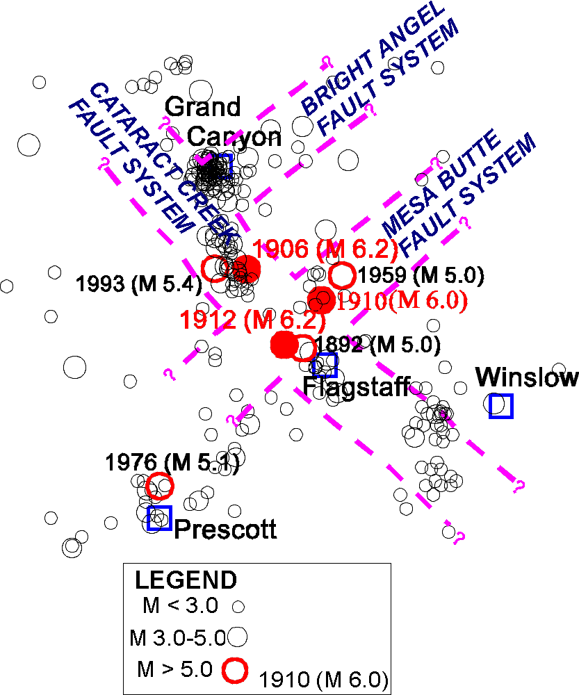
Prepared by:
Douglas B. Bausch and David S. Brumbaugh
Douglas.Bausch@nau.edu and David.Brumbaugh@nau.edu
Arizona Earthquake Information Center
Northern Arizona University
P.O. Box 4099
Flagstaff, Arizona 86011
EXECUTIVE SUMMARY
The following report was prepared by the Arizona Earthquake Information Center (AEIC) as a continuation of studies for the Arizona Division of Emergency Management's Earthquake Program. The accompanying maps were prepared and presented to the Flagstaff Community during 1993 with funding provided by the Federal Emergency Management Agency (FEMA) under cooperative agreement number AZ102EPSA. These seismic hazard evaluations began in 1988, and included several products at the state level, as well as more detailed mapping provided for seven key communities within Arizona. The summary below describes the products prepared by the AEIC under these programs.
Two products were prepared at the state level at a scale of 1:1,000,000. The first product was a State of Arizona Maximum Intensity Ground Shaking Map (1887-1987) (Morrison and others, 1991) that contours the maximum levels of historical ground shaking experienced within the state. The second product prepared for the state was the Arizona 100-Year Accelerations contour map (Bausch and others, 1993). The acceleration mapping required a detailed analysis of seismic sources affecting Arizona, and their probability for recurrence. These interpretations were input into the U.S. Geological Survey computer program SEISRISK III (Bender and Perkins, 1987). The 100-year contour map illustrates the force of gravity expressed as a percentage of 1.0 g that has a 90-percent chance of not being exceeded during the next 100 years. The output consisted of a grid of about 4,000 data points that were contoured for Arizona and outlying regions. The preparation of these two map products, conclusions and recommendations are explained in the State Report (Bausch and Brumbaugh, 1994). More detailed seismic hazard mapping was provided for seven key communities in Arizona. The communities were selected based on their proximity to faulting, historical seismicity, and population. The communities of Grand Canyon Village, Flagstaff, Winslow, Prescott, Phoenix, Tucson and Flagstaff were selected for these studies. The community-based seismic hazard evaluation provides mapping of key geologic units that are expected to exhibit different intensities of ground shaking, as well as neotectonic faults, selected critical facilities, and the 50, 100 and 250 year acceleration data points and values from the state-wide project. The mapping is prepared utilizing 7.5-minute U.S. Geological Survey base maps that cover the urbanized area of each community. These maps are accompanied by this report for the Flagstaff community that analyzes the vulnerabilities of the community and provides conclusions and recommendations.
STATE MAPPING PRODUCTS
• Maximum Intensity Ground Shaking Map (1887-1987)
• Arizona 100-Year Probabilistic Acceleration Contour Map
ARIZONA KEY COMMUNITY SEISMIC HAZARD EVALUATION
• Seismic Hazard Mapping of Local Geology and Accelerations for Seven Key Arizona Communities
1) Grand Canyon Village 2) Prescott 3) Flagstaff
4) Phoenix 5) Winslow 6) Tucson
7) Yuma
Communities were selected using a combination of three criteria: 1) historic seismicity; 2) proximity of faulting; and, 3) population.
These products are prepared for the application of earthquake hazard planning and preparedness, and should not be considered for site-specific construction design. Copies of this report can be obtained through the Arizona Division of Emergency Management, 5636 East McDowell Road, Phoenix, Arizona 85008, Attention: Mr. Al Franco, Earthquake Program Manager (602) 392-7510. Comments concerning these publications are welcome.
ABSTRACT
The community of Flagstaff was selected as a key community based upon its relatively large (51,000 persons) and rapidly expanding population, proximity to seismic sources, and damaging historical earthquakes. The risk of ground shaking in the Flagstaff area is considered moderate. However, the overall seismic risk to the Flagstaff community is increased by the growing population, and presence of unreinforced masonry buildings. Because of these factors, this report contains a detailed analysis of the seismic hazard to the Flagstaff region.
The seismic hazard for the Flagstaff region is considered second only to the Yuma community in the State of Arizona. Flagstaff is subject to ground shaking from earthquakes originating in the Northern Arizona Seismic Belt (NASB). Historically, earthquakes originating in this belt have resulted in ground shaking and damage to the Flagstaff region in 1906 (M 6.2), 1910 (M 6.0) and 1912 (M 6.2). Other historical accounts describe earthquake shaking in the Flagstaff area, and on average an earthquake is felt in the community each year. The occurrence of these historical earthquakes indicates that there is about a 50% chance of M 6.0 or larger earthquake occurring during the next 30 years within the NASB. This event is considered the Maximum Probable Earthquake (MPE) for the Flagstaff community.
The northwest trending Cataract Creek fault system underlies the Flagstaff region and appears to be controlling much of the area’s seismicity. The Lake Mary fault graben, located just south of Flagstaff (see cover photo), is one of the longest segments of this system. A large ground rupturing earthquake on this fault could produce a magnitude 7+ event, and is considered a worst-case scenario for the Flagstaff community.
Because of these risks, Arizona is designated by the Federal Emergency Management Agency National Earthquake Hazards Reduction Program as a "High Risk" state for earthquakes.
TABLE OF CONTENTS
SECTION
EXECUTIVE SUMMARY
ABSTRACT
1.0 CAUSES, NATURE AND MEASUREMENT OF EARTHQUAKES
1.1 What to do Before, During and After an Earthquake
2.0 FEDERAL PROGRAMS RELATED TO LOCAL SEISMIC HAZARDS
2.1 Federal Legislation
2.2 Earthquake Insurance
2.2.1 Federal Earthquake Insurance Proposals
3.0 EARTHQUAKE HAZARD EVALUATION: PROCEDURE
3.1 Ground Shaking
3.1.1 Predicting Ground Motion
3.2 Ground Failure
3.2.1 Slope Stability
3.2.2 Liquefaction
3.2.3 Ground Rupture
4.0 PREPARATION OF GROUND SHAKING MAPS FOR THE COMMUNITY OF FLAGSTAFF
4.1 Peak Ground Acceleration Mapping for the Flagstaff Community
4.2 Effects of Local Geology
4.2.1 Alluvium and Young Alluvium
4.2.2 Basement Rock: Igneous and Metamorphic Rock
4.2.3 Shallow Ground Water
5.3 1912 M 6.2
6.0 EARTHQUAKE SOURCES
6.1 Cataract Creek Fault System
7.0 DESIGN EARTHQUAKE
7.1 Impact of the Design Earthquake on the Flagstaff Community
8.0 VULNERABILITY OF THE FLAGSTAFF COMMUNITY TO SEISMIC HAZARDS
8.1 Ground Shaking Parameters
8.2 Hazardous Buildings and Structures
8.3 Critical Facilities
8.4 Lifelines
9.0 SUMMARY AND CONCLUSIONS
10.0 MITIGATION OPPORTUNITIES
10.1 Special Development Regulations
10.2 Hazard Reduction
10.3 Recovery and Reconstruction
10.4 Recommended Goals and Policies
10.4.1 Retrofit and Strengthening of Existing Facilities
10.4.2 Strengthening and Enforcing Seismic Codes
10.4.3 Public Education
11.0 REFERENCES
12.0 GLOSSARY
LIST OF TABLES, FIGURES AND PLATES
TABLES
1) GEOLOGIC TIME SCALE
2) ABRIDGED MODIFIED MERCALLI INTENSITY SCALE
3) NEOTECTONIC FAULTS OF THE FLAGSTAFF AREA
4) COMPARISON OF PROBABILISTIC ACCELERATION VALUES FROM SEVERAL STUDIES
5) DESIGN EARTHQUAKES
FIGURES
1) SEISMOGRAPH STATION LOCATIONS IN ARIZONA
2) U.B.C. SEISMIC ZONATION OF THE UNITED STATES
3) GENERAL GROUND SHAKING RISK MAP FOR ARIZONA
4) PROBABILISTIC ACCELERATION CONTOUR MAPPING FOR ARIZONA
5) NEOTECTONIC FAULTS OF THE FLAGSTAFF AREA
6) ACCELERATION PROBABILITIES-ARIZONA KEY COMMUNITY COMPARISON
7) ARIZONA EARTHQUAKES (1830-1993)
8) LOCAL SEISMICITY
9) ISOSEISMAL MAP OF 1906 M 6.2 EARTHQUAKE
10) ISOSEISMAL MAP OF 1910 M 6.0 EARTHQUAKE
11) ISOSEISMAL MAP OF 1912 M 6.2 EARTHQUAKE
12) SOFT STORY-TIMBER POLE CONSTRUCTION
13) UNREINFORCED MASONRY CONSTRUCTION
14) PRECAST CONCRETE FRAME CONSTRUCTION
PLATES
PLATE 1 - BELLEMONT 7.5 MINUTE U.S.G.S. QUADRANGLE, COMMUNITY MAP SERIES SEISMIC HAZARD EVALUATION-IN POCKET
PLATE 2 - HUMPHREYS PEAK 7.5 MINUTE U.S.G.S. QUADRANGLE, COMMUNITY MAP SERIES SEISMIC HAZARD EVALUATION-IN POCKET
PLATE 3 - FLAGSTAFF WEST 7.5 MINUTE U.S.G.S. QUADRANGLE, COMMUNITY MAP SERIES SEISMIC HAZARD EVALUATION-IN POCKET
PLATE 4 - MOUNTAINAIRE 7.5 MINUTE U.S.G.S. QUADRANGLE, COMMUNITY MAP SERIES SEISMIC HAZARD EVALUATION-IN POCKET
PLATE 5 - SUNSET CRATER WEST 7.5 MINUTE U.S.G.S. QUADRANGLE, COMMUNITY MAP SERIES SEISMIC HAZARD EVALUATION-IN POCKET
PLATE 6 - FLAGSTAFF EAST 7.5 MINUTE U.S.G.S. QUADRANGLE, COMMUNITY MAP SERIES SEISMIC HAZARD EVALUATION-IN POCKET
PLATE 7 - LOWER LAKE MARY 7.5 MINUTE U.S.G.S. QUADRANGLE, COMMUNITY MAP SERIES SEISMIC HAZARD EVALUATION-IN POCKET
1.0 CAUSES, NATURE AND MEASUREMENT OF EARTHQUAKES
Earthquakes occur when stresses within the earth's crust are relieved by slippage along rupture surfaces known as faults. The rupture process generates waves that radiate from the fault source, affecting people and structures on the surface of the earth. Although the process is conceptually simple, the factors controlling the precise nature of an earthquake are not completely understood. Further geological and seismological research is needed to assess where and when earthquakes will occur in the future, as well as how large they are likely to be, and to anticipate the probable effects on various types of man made structures.
The focus, or hypocenter, of the earthquake is the point within the earth's crust where the initial rupture of the rocks occurs and where the elastic waves from the earthquake are first released. The majority of earthquakes recorded in the United States have had shallow focal depths; 15 km or less; and have occurred in regions containing faults outcropping at the surface. In other regions, however, earthquakes occur at deeper locations within the earth's crust, so that a surface rupture is not often observable in the field. The later process is perhaps the most common within the study area. Relatively deep earthquakes often exceeding 15 km are recorded for the Colorado Plateau (AEIC Catalog of Earthquakes, Wong and Chapman, 1986). In addition, no surface rupturing events associated with Colorado Plateau earthquakes have been observed during historic time.
The epicenter of an earthquake is the projection of the focus up onto the earth's surface. In the absence of instrumental data, epicenters have often been established on the basis of felt reports and the damage that is observed. However, epicenters are now typically located by the relative arrival times of seismic wave components received at various instruments operating within a seismograph network. In Arizona, there are twelve seismic stations located throughout the state at Tucson, Yuma, Phoenix, Flagstaff, Williams, Jerome, Sunset Crater, Blue Ridge Reservoir, Pipe Springs National Monument and the south and north rims of the Grand Canyon (Figure 1). However, in view of Arizona's earthquake risk and size, this is considered sparse seismic station coverage. Historically, seismic station coverage for Arizona is considered very sparse. The earthquake risk to the state can best be determined by adequate seismic station coverage that collects and processes accurate earthquake data. The accuracy of epicenter and hypocenter locations depends upon: (1) The number of reliable recording stations; (2) geologic interpretations of crustal structures; and (3) knowledge of local earthquake wave propagation velocities in various areas.
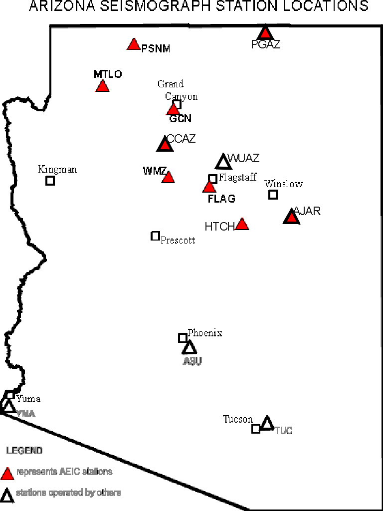
Figure 1 - Locations of seismograph stations within Arizona. Stations maintained by the AEIC are shown by open triangles, and include remote analog stations PSNM and SCN operated by the National Park Service, and JRAR operated by the State Parks service. Other operators in Arizona include: Arizona State University (ASU), Caltech (YUM), and University of Arizona (TUC).
Earthquakes are normally classified as to severity according to their magnitude (usually using the Richter scale), or their seismic intensity. Richter magnitude is a logarithmic measure of the maximum motions of the seismic waves as recorded by a seismograph. Because this size classification is based on a logarithmic scale, a magnitude 8 earthquake is not twice as big as a magnitude 4 earthquake, but rather, 10,000 (i.e., 104 or 10x10x10x10) times larger. More recently, seismologists have shown that magnitude is also proportional to the energy released during an earthquake, but at a level 32 times greater between earthquake magnitudes (e.g., a magnitude 6 earthquake releases 32 times the energy as a magnitude 5 earthquake).
The magnitude of an earthquake is intended to be a measurement of its size, independent of the place of observation. It is calculated from measurements on seismographs. Physically, the magnitude can be correlated with the energy released by an earthquake, as well as with the fault rupture length and the maximum fault displacement. At present, at least four different magnitudes are in common use for classifying earthquakes: (1) local magnitude (ML), the classic Richter magnitude based on peak response of a calibrated instrument; (2) body-wave magnitude (mb), based on the response amplitude of the primary (P-wave) body-wave; (3) surface wave magnitude (MS), based on the response amplitudes of long-period surface waves; and (4) the moment magnitude (MW), which is the most complete measure of earthquake size. Moment magnitude (MW) is directly based on the amount of energy released during an earthquake and can be measured by a geologist in the field examining the fault geometry, as well as by a seismologist studying the digital waveforms. Each of these magnitudes are used in this report, and are derived from a well-calibrated instrument, knowledge of the characteristics of the rock through which the seismic waves must travel and the local conditions at the seismograph station.
In the absence of instrumental recordings of ground motion, seismologists have described the ground movement by assigning intensity numbers according to subjective intensity scales. Following an earthquake, the assignment of an intensity to a given location is based on interviews with inhabitants of the area and on observations of damage in the area. Assigned intensity values from different locations are then combined to formulate a map containing a series of isoseismals, contours that separate regions of successive intensity rating. The shape and extent of the isoseismals are influenced by the tectonic features of the area, indicating predominant directions along which seismic waves are transmitted and the manner in which the earthquake originates (NUREG, 1975). In addition, several other factors influence the felt intensity of an earthquake, including: population density, local geology, shallow ground water, and building type.
The destructiveness of an earthquake at a particular location is commonly reported using the Modified Mercalli Scale of seismic intensity. Seismic intensities are subjective classifications based on reports of ground shaking and damage caused by past earthquakes. There are several seismic intensity scales; the one used most often is the Modified Mercalli Intensity (MMI) scale. The MMI scale was modified in the 1930's to address construction practices and affects on new inventions such as automobiles, and the scale is undergoing modification during the writing of this report to address modern construction practices, such as steel frame buildings. This scale has 12 levels of intensity; the higher the number, the greater the ground shaking intensity and/or damage.
Earthquakes have only one magnitude, but they have variable intensities that generally decrease with increasing distance away from the source. However, other factors such as local geology, shallow ground water and building type affect the intensities of earthquakes at a site. For example, greater intensities are associated with poorly consolidated alluvial soils, high ground water levels, poor construction practices and unreinforced masonry structures. Certain soils greatly amplify the shaking in an earthquake. Seismic waves travel at different speeds in different types of rock, and when seismic waves pass from rock to soil they generally slow down and get bigger. The looser and thicker the soil is, the greater the amplification will be. For example, ground motion that damaged regions underlain by poorly consolidated sediment in the Loma Prieta earthquake were 10 times greater than neighboring regions. In addition, earthquakes such as Northridge 1994 and Kobe 1995 have demonstrated the influence of fault rupture directivity on intensity distribution. When the earthquake rupture moves along the fault, it focuses energy in the direction it is moving so that a site in that direction will receive more shaking than a site the same distance away but in the opposite direction.
1.1 What to do Before During and After an Earthquake
The following is a list of tasks that individuals at the home or office should undertake to lessen the overall impact of a major earthquake.
Before an Earthquake:
• Remove or correct interior nonstructural hazards, such as top-heavy bookcases and storage cabinets, water heaters and other appliances. Anchor furniture and water heaters against the wall and provide gas-fired appliances with flexible connections.
• Set aside a supply of emergency food and water, and obtain first aid materials, a gas shut-off wrench, fire extinguisher, and battery-powered radio. Identify neighbors with first aid training and check for an emergency supply of medication for all members of the family, especially children, disabled, and elderly.
• Practice taking cover. This exercise will make people aware of the safest places during an earthquake, such as under a desk, table, bed or strong doorway. The maximum duration of shaking from an earthquake impacting the city of Flagstaff is expected to be roughly 20 to 30 seconds.
• Practice exiting. Walk the possible escape routes from your house or office and plan to avoid light fixtures, masonry chimneys, unsupported walls and other overhead hazards. Power for elevators and escalators may fail in high-occupancy facilities, so be aware of alternate exits. Do not panic or run; crowded exits should be evacuated in an orderly manner to avoid additional injuries in a rush for the door, emergency loud speaker systems may give instructions.
• Practice turning off electricity and water and know how to turn off gas at the main. Replace rigid inlet gas connection lines to water heaters with flexible line. For safety reasons, do not practice gas shut-off; only the utility company should turn the gas back on. Be sure anyone in the household can locate main switches and valves.
• Review the responsibilities of each family member after an earthquake. Plans for picking up children from schools, day-care centers, or other facilities with dependents should be regularly checked and reviewed. Have the phone number available of the person outside of the area for management of family messages.
• Contact the City and neighbors about forming a neighborhood co-op self-help group.
During an Earthquake:
• Stay calm.
• If you are indoors remain indoors.
• If in your place of residence, crouch under a desk or table, or brace yourself in a doorway (Be aware that it is possible for doors to swing shut during a quake). Try to protect your head with a coat, cushions, etc. Stay away from windows or brick masonry (fireplaces), china cabinets, hanging cabinets, or anything else that might possibly fall on you.
• If you are in a high-rise building stay away from outside walls and windows. Do not use the elevator.
• If outdoors remain outdoors. Try to move away from buildings, powerlines, trees, or anything that might fall on you.
• If you are in a car try to move away from overpasses. Stop slowly and remain in your car. If possible try not to park where building material may fall on your car.
After an Earthquake:
• Check for injuries in your family and neighborhood.
• Extinguish small fires and check for additional fire hazards, such as cracked walls, roof lines and attics, and other physical signs of structural damage that can cause a malfunction in the electrical wiring.
• Check for the smell of leaking gas, and if detected, shut off gas at the gas meter. Unanchored gas heaters or gas-fired hot water heaters may experience damage to valves and service connections, especially those without flexible line connections.
• Shut off electrical power if there is damage to the wiring or there is a gas leak. The main switch is usually located in or next to the main fuse or circuit breaker box.
• Clean up flammable liquids, medicines, and other harmful substances.
• Check for structural and nonstructural damage, such as cracked chimneys, fallen power lines, and other objects that may become unstable and fall during an aftershock.
• Try not to use water, it may result in a drop in water pressure for firefighting purposes (fire flow). Toilets should not be flushed until both incoming water lines and outgoing sewer lines have been checked to see if they are open.
• Try not to use the phone unless it is a genuine emergency. Emergency and damage report alerts, and other information may be obtained by turning on your radio.
• Report serious injuries and significant damage to a nearby city emergency reception center.
2.0 FEDERAL PROGRAMS RELATED TO LOCAL SEISMIC HAZARD ANALYSIS
2.1 Federal Legislation
At the federal level, there are two important pieces of legislation relating to local seismic hazard assessment. These are Public Law 93-288, amended in 1988 as the Stafford Act that establishes basic rules for federal disaster assistance and relief, and the Earthquake Hazards Reduction Act of 1977, amended in 1990, which establishes the National Earthquake Hazards Reduction Program (NEHRP).
The Stafford Act briefly mentions "construction and land use" as possible mitigation measures to be used after a disaster to forestall repetition of damage and destruction in subsequent events. However, the final rules promulgated by the Federal Emergency Management Agency (FEMA) to implement the Stafford Act (44 CFR Part 206, Subparts M and N) require post-disaster state-local hazard mitigation plans to be prepared as a prerequisite for local governments to receive disaster assistance funds to repair and restore damaged or destroyed public facilities. Under the regulations implementing Section 409 of the Stafford Act, a city or county must adopt a hazard mitigation plan acceptable to FEMA if it is to receive facilities restoration assistance authorized under Section 406.
The overall purpose of the National Earthquake Hazards Reduction Act is to reduce risks to life and property from earthquakes. This is to be carried out through activities such as: hazard identification and vulnerability studies; development and dissemination of seismic design and construction standards; development of an earthquake prediction capability; preparation of national, state and local plans for mitigation, preparedness and response; conduct basic and applied research into causes and implications of earthquake hazards; and, education of the public about earthquakes. While this bears less directly on earthquake hazards for a particular local government, much of the growing body of earthquake-related scientific and engineering knowledge has been developed through NEHRP funded research, including this study.
2.2 Earthquake Insurance
After every major earthquake, the problem of financing recovery and reconstruction reemerges. As urban settlement has expanded worldwide, disasters have been experienced with increasing frequency and publicity. So it would seem reasonable for private and public sector organizations to plan in advance to provide more adequately for such contingencies.
Yet disaster relief and recovery resources are not consistently adequate or timely. Federal and state disaster assistance covers only a portion of the loss encountered in major earthquakes. Sometimes it is not received until long after the critical needs for such assistance are experienced. Consequently, many households, businesses and industries are significantly disrupted and many smaller enterprises go out of business after a major disaster.
The optimum solution would be to build cities strong enough and located so as to withstand the worst damage likely to be caused by natural disasters. Gradually, as older cities are renewed with each cycle of rebuilding and reinvestment and as new cities are built with better codes and land use practices, this goal will come closer to being achieved. But the experience of hazard mitigation to date, together with the evolving state of scientific knowledge and incomplete coverage of federal and state disaster assistance, suggest that additional sources of financial support for post-disaster recovery and reconstruction are needed. One possible source is earthquake insurance.
Historically, insurance coverage for earthquake damage has been either unavailable or prohibitively expensive. This was because there were previously no established actuarial methods for accurately estimating earthquake losses in advance of such disasters. Because scientific methods of earthquake prediction and loss estimation were in their infancy, insurance companies have found it difficult to reasonably estimate what probable maximum loss they might incur by insuring against for a catastrophic disaster. Therefore, they could not be sure whether or not they could remain in business after such an event if payment of claims plus operating costs were to exceed premiums collected.
Improvements in loss estimation have proceeded sufficiently in the past decade, however, so that more insurance companies have begun to provide earthquake insurance, although still costly, with high deductibles. Some insurance companies are today better able to distinguish more clearly the level of risk by geographic area. Computerized methods, including Geographic Information Systems (GIS), have made it possible for some of the more sophisticated companies to begin to model and forecast potential losses, based upon information gathered and maintained about localized areas and the structures now being insured.
Although this growing trend in sophistication has helped insurance companies improve their available coverage to some degree, less than a third of all property owners in earthquake prone areas are estimated to be participating in earthquake insurance. Moreover, sophisticated new industry technology cannot overcome the problem of a nationwide impact likely to be created by a catastrophic event. Destruction anticipated in various catastrophic earthquake scenarios is so large and difficult to estimate that a national program to cover seismically induced losses has been slow to evolve and faces serious difficulties in enactment. Direct losses of such an event have been estimated varyingly in the tens of billions of dollars and indirect losses at several magnitudes more.
2.2.1 Federal Earthquake Insurance Proposals
In recent years, the insurance industry has approached the federal government to enact legislation which would require 100% mandatory coverage in all homeowner and commercial risk insurance, backed up by a federally sponsored reinsurance pool to which loans could be made by the federal government to offset losses incurred in a catastrophic event (Earthquake Project, 1989). Such loans would be paid back through future premium receipts.
Passage of such legislation has been stalled by disagreement over the issue of whether or not federally required earthquake insurance should be accompanied by hazard mitigation in high risk areas to reduce the potential magnitude of losses over time. The argument for hazard mitigation as part of a national earthquake insurance program is predicated on principles similar to those underlying the federal flood insurance program which has been in place for nearly two decades. That program has identified high risk areas by issuance of Flood Insurance Rate Maps which cities and counties are obligated to observe through requiring hazard mitigation measures in their local planning and zoning practices in high flood hazard areas.
The argument for mandatory mitigation goes, in short, why penalize those who are not in high risk areas by requiring them to absorb costs of losses which might otherwise be avoided through proper hazard mitigation? The counter argument is that mandatory mitigation would increase local development costs in many communities where earthquake losses may not be experienced. Although involved interests are far from agreement on the role and level of required mitigation, there is a reasonable expectation that a compromise will be worked out as the probabilities of a catastrophic earthquake disaster increase each year.
3.0 EARTHQUAKE HAZARD EVALUATION: PROCEDURE
The seismic hazard evaluation for the Flagstaff area is determined by the analysis of the following factors:
1.) Preparation of community ground shaking maps utilizing seven U.S. Geological Survey 7.5-minute quadrangles as a base (Plates 1-7, In Pocket). The community maps are prepared to illustrate: the differences in ground shaking intensity based on geologic type; 50, 100 and 250 year acceleration data, and reference facilities and landmarks.
2.) Geographical factors such as the pattern, type, and movement of a nearby potentially active fault or fault system, and the distance of the fault to the area under investigation. An evaluation of the previous work performed in the area provides information for this segment of the earthquake hazard evaluation.
3.) The spatial and temporal distribution of historic earthquake epicenters. Historic records are utilized for this portion of the analysis.
4.) Evaluation of isoseismal maps (based on the Modified Mercalli Intensity scale that uses felt reports to map the extent and magnitude of earthshaking), to provide information on the expected intensity, type of ground motion, and the distribution of future earthquakes.
5.) Geologic criteria such as slope stability, ground rupture, liquefaction and other seismically induced geologic hazards. The geometry of the underlying fracture system, the profile of the overlying surficial deposits and the basement/soil interaction are important in the evaluation of seismic risk. Seismic amplification and dampening are controlled by the soil/basement profile and topographic effects, while mass movement may result from the applied seismic force (Seed and others, 1969).
6.) Vulnerability of critical facilities and lifelines based on structural type and seismic building code conformance. For this information the Uniform Building Code (U.B.C.) should be consulted. The U.B.C. for a given area varies with seismic zonation and by the importance of the structure to the community. The Flagstaff regions lies within U.B.C. Zone 2b, as shown on the most current U.B.C. zonation mapping (Figure 2).
Given the generalized nature of this study, the seismic history of the area is significant. The frequency, ground acceleration, magnitude and intensity of past earthquakes are essential data (Haley and Hunt, 1974). The maps prepared for this study are recommended for planning purposes only; site specific investigation, especially for critical facilities are warranted.
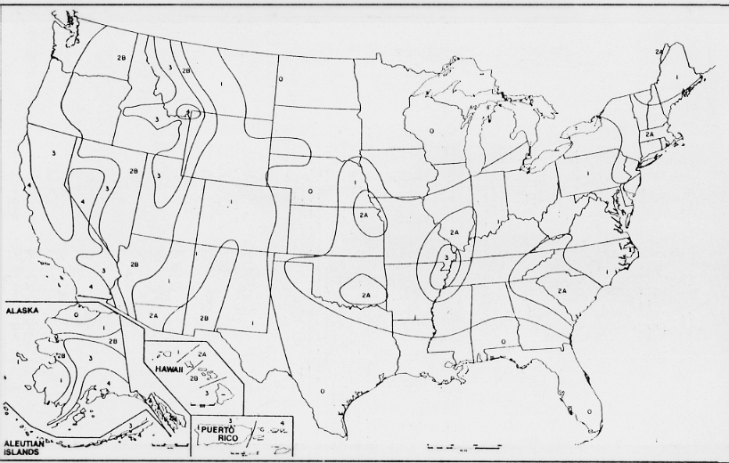
Figure 2: Seismic zone map of the United States from the 1994 Uniform Building Code (UBC). Designations range from 0 to 4, with 4 representing the greatest ground shaking potential. The Flagstaff community lies within zone 2b of the national mapping. States and local communities are allowed to exceed the UBC requirements based on the local knowledge of their engineering communities.
3.1 Ground Shaking
Several faults have the potential of generating earthquakes that will cause strong ground motions in Arizona, including in the City of Flagstaff and Coconino County. The Flagstaff region is located within an area of moderate risk of earthquake ground shaking (Figure 3). Each of these potential earthquakes will affect Flagstaff differently, depending on the distance between the earthquake-generating fault and Flagstaff, the size and rupture mechanism of the earthquake, and the local geologic conditions. Some faults are also more likely to cause an earthquake than others. The Flagstaff area is located within the Northern Arizona Seismic Belt that defines the tectonic boundary of the Colorado Plateau (Brumbaugh, 1987).
Seismic waves propagating through the earth's crust are responsible for the ground vibrations normally felt during an earthquake. Seismic waves vibrate up and down and side to side at different frequencies, depending on the frequency content of the earthquake rupture mechanism, the distance from the earthquake source to a particular site, and the path and material through which the waves are propagating. As seismic waves travel through the earth's crust, their energy is lost due to the inelastic behavior of the ground motion, and due to scattering, diffraction and deflection of the waves as they cross materials of different physical properties. The overall effect, known as attenuation, alters the form and frequency content of the seismic waves with distance away from the earthquake's source.
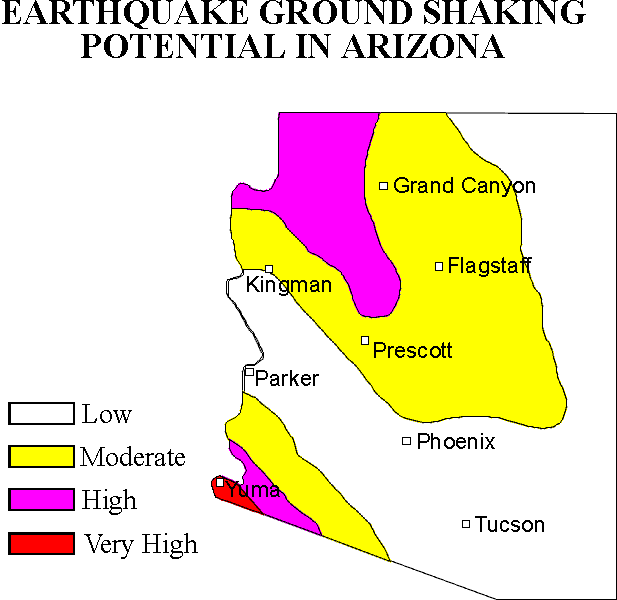
Figure 3: General ground shaking risk map for Arizona, based on 100 year probabilistic acceleration mapping of Bausch and Brumbaugh (1994). Overall earthquake risk not only includes the risk of ground shaking, but is increased by factors such as population density, building-type and age, and local geologic conditions.
TABLE 1 - GEOLOGIC TIME SCALE
|
Era |
Period |
Epoch |
Approximate duration in millions of years |
Millions of years ago |
|
Cenozoic |
Quaternary |
Holocene |
Approximately the last 10,000 years |
|
|
Pleistocene |
2.5 |
2.5 |
||
|
Tertiary |
Pliocene |
4.5 |
7 |
|
|
Miocene |
19.0 |
26 |
||
|
Oligocene |
12.0 |
38 |
||
|
Eocene |
16.0 |
54 |
||
|
Paleocene |
11.0 |
65 |
||
|
Mesozoic |
Cretaceous |
71 |
136 |
|
|
Jurassic |
54 |
190 |
||
|
Triassic |
35 |
225 |
||
|
Paleozoic |
Permian |
55 |
280 |
|
|
Pennsylvanian |
45 |
325 |
||
|
Mississippian |
20 |
345 |
||
|
Devonian |
50 |
395 |
||
|
Silurian |
35 |
430 |
||
|
Ordovician |
70 |
500 |
||
|
Cambrian |
70 |
570 |
||
|
|
||||
|
Precambrian |
4030 |
|
||
Near-field earthquakes, which occur within approximately 10 miles of the site of reference, generate rough, jerky, high-frequency seismic waves that are generally more efficient in causing short buildings, such as single-family residential structures, to vibrate. Longer period wave forms, characteristic of far-field earthquakes, are felt at greater distances from the earthquake source. These longer-period waves, manifested as a slow rolling motion, are more likely to cause high-rise buildings and buildings with large floor areas to vibrate vigorously. An earthquake on the southern Hurricane or Toroweap faults within the Arizona Strip would be an example of a far-field earthquake affecting Flagstaff, as opposed to a relatively near-field event on the Lake Mary fault.
Faults in Arizona have formed over millions of years as a response to various tectonic stress regimes. Some of these faults are generally considered inactive under the present geologic conditions, that is, they are unlikely to generate future earthquakes. Other faults are known to be accumulating strain as a result of current shifting of the earth's plates. Such faults have either generated earthquakes in historical times, or show geologic and geomorphic characteristics that suggest that they might move in the relatively recent future, within a time span of concern to the residents of the area, or for long-term consideration in building design.
In general, the probability of an earthquake occurring on a given fault decreases with age of the latest proven faulting. That is, geologically young faults (Quaternary) are more likely to move than pre-Quaternary faults. However, it is at times difficult to determine with a certain degree of confidence, which faults are capable of moving in the future, and which ones are not likely to move under the present stress regime. Geologic evidence suggests that some faults may remain dormant for hundreds to thousands of years between major displacements. The geologic time scale (Table 1) is often used as a yardstick of latest proven faulting to evaluate the risk a fault may pose to development. For Arizona, existing studies (Scarborough and others, 1983; Menges and Pearthree, 1983; Pearthree and others, 1983; and Scarborough and others, 1986) define neotectonic faults as those that exhibit signs of surface displacement within the last about 4 million years (Late Pliocene-Quaternary).
TABLE 2 - ABRIDGED MODIFIED MERCALLI INTENSITY SCALE
|
Intensity Value and Description |
Average peak velocity (centimeters per second) |
Average peak acceleration (g is gravity = 9.80 meters per second squared) |
|
I. Not felt except by a very few under especially favorable circumstances (I Rossi-Forel scale) |
|
|
|
II. Felt only by a few persons at rest, especially on upper floors of high-rise buildings. Delicately suspended objects may swing. (I to II Rossi-Forel scale) |
|
|
|
III. Felt quite noticeably indoors, especially on upper floors of buildings, but many people do not recognize it as an earthquake. Standing automobiles may rock slightly. Vibration like passing of truck. Duration estimated. (III Rossi-Forel scale) |
|
|
|
IV. During the day felt indoors by many, outdoors by few. At night some awakened. Dishes, windows, doors disturbed; walls make creaking sound. Sensation like a heavy truck striking building. Standing automobiles rocked noticeably. (IV to V Rossi-Forel scale) |
1-2 |
0.015g-0.02g |
|
V. Felt by nearly everyone, many awakened. Some dishes, windows, and so on broken; cracked plaster in a few places; unstable objects overturned. Disturbances of trees, poles, and other tall objects sometimes noticed. Pendulum clocks may stop. (V to VI Rossi-Forel scale) |
2-5 |
0.03g-0.04g |
|
VI. Felt by all, many frightened and run outdoors. Some heavy furniture moved, a few instances of fallen plaster and damaged chimneys. Damage slight. (VI to VII Rossi-Forel scale) |
5-8 |
0.06g-0.07g |
|
VII. Everybody runs outdoors. Damage negligible in buildings of good design and construction; slight to moderate in well-built ordinary structures; considerable in poorly built or badly designed structures; some chimneys broken. Noticed by persons driving cars. (VIII Rossi-Forel scale) |
8-12 |
0.10g-0.15g |
|
VIII. Damage slight in specially designed structures; considerable in ordinary substantial buildings with partial collapse; great in poorly built structures. Panel walls thrown out of frame structures. Fall of chimneys, factory stacks, columns, monuments, and walls. Heavy furniture overturned. Sand and mud ejected in small amounts. Changes in well water. Persons driving cars disturbed. (VIII+ to IX Rossi-Forel scale) |
20-30 |
0.25g-0.30g |
|
IX. Damage considerable in specially designed structures; well-designed frame structures thrown out of plumb; great in substantial buildings with partial collapse. Buildings shifted off foundations. Ground cracked conspicuously. Underground pipes broken. (IX+ Rossi-Forel scale) |
45-55 |
0.50g-0.55g |
|
X. Some well-built wooden structures destroyed; most masonry and frame structures destroyed with foundations; ground badly cracked. Rails bent. Landslides considerable from river banks and steep slopes. Shifted sand and mud. Water splashed, slopped over banks (X Rossi-Forel scale) |
More than 60 |
More than 0.60g |
|
XI. Few, if any, (masonry) structures remain standing. Bridges destroyed. Broad fissures in ground. Underground pipelines completely out of service. Earth slumps and land slips in soft ground. Rails bent greatly. |
|
|
|
XII. Damage total. Waves seen on ground surface. Lines of sight and level distorted. Objects thrown into air. |
|
|
Primary Source: Bolt (1993)
Faults with infrequent recurrence, however, should be considered in the design phase and seismic analyses of many types of projects, such as nuclear facilities, dams and emergency operation centers. When their risk cannot be established, these faults may also be treated in the same manner as active faults, including designating building setbacks if necessary. The activity classification of faults may also change as geologic field studies along the trace of the fault are conducted, or if an earthquake occurs on a fault previously considered inactive. Some historical earthquakes have even occurred along previously unknown faults.
Maximum Probable Earthquake: A maximum probable earthquake is the largest earthquake a fault is predicted capable of generating within a specified time period of concern, say 30 or 100 years. Maximum probable earthquakes are most likely to occur within the time span of most developments, and therefore, are commonly used in assessing seismic risk.
Maximum Credible Earthquake: The maximum credible earthquake, i.e. the largest earthquake a fault is believed capable of generating, is nevertheless, often considered in a number of planning and engineering decisions. For example, maximum credible earthquakes are considered in the design of critical facilities such as dams, nuclear power plants, and emergency operation centers. They are also used in urban and emergency planning to identify and mitigate the risk of worst-case scenarios.
Earthquakes are normally classified as to severity according to their magnitude (usually using the Richter scale), or their seismic intensity. Richter magnitude is a logarithmic measure of the maximum motions of the seismic waves as recorded by a seismograph. Because this size classification is based on a logarithmic scale, a magnitude 8 earthquake is not twice as big as a magnitude 4 earthquake, but rather, 10,000 (i.e. 104 or 10x10x10x10) times larger. The destructiveness of an earthquake at a particular location is commonly reported using a seismic intensity scale. Seismic intensities are subjective classifications based on reports of ground shaking and damage caused by past earthquakes. There are several seismic intensity scales; the one used most often is the Modified Mercalli Intensity (MMI) scale (Table 2). This scale has 12 levels of intensity; the higher the number, the greater the ground shaking intensity and/or damage. Earthquakes have only one magnitude, but they have variable intensities that generally decrease with increasing distance away from the source. However, other factors such as local geology, shallow ground water and building type affect the intensities of earthquakes at a site.
3.1.1 Predicting Ground Motion
Ground motion caused by earthquakes is generally characterized using the parameters of ground displacement, velocity, and acceleration (Figure 4). Engineers traditionally work with ground acceleration, rather than with velocity or displacement, since acceleration is directly related to the dynamic forces that earthquakes induce on structures. The most often used measure of the strength of ground motion is peak ground acceleration. Peak ground accelerations are generally calculated using empirical attenuation equations that describe the behavior of the ground motions as a function of the magnitude of the earthquake, and the distance between the site and the seismic source (the causative fault). The increasingly larger pool of seismic data recorded in the world, and particularly in the western United States, has allowed researchers to develop reliable empirical attenuation equations that are used to model the ground motions generated during an earthquake.
Although computer models are now routinely used to predict the ground motions expected at a given site as a result of an earthquake, it is still difficult to anticipate the damage sustained by different types of structures during an earthquake. This is so because the response of structures to ground shaking depends on many parameters, including the amplitude and frequency content of the seismic waves, and the duration of shaking. The frequency content of the ground motion, in turn, depends on the rupture mechanism of the earthquake, the properties of the materials that attenuate the seismic energy, and the regional and local site conditions that may amplify, focus, or defocus the seismic waves arriving at the site of interest. In addition, different structures, because of differences in their natural frequencies and modes of vibration, respond differently to a given ground motion. For planning of critical facilities, therefore, it is often best to study the effects of the worst-case scenario, using as standard the maximum credible earthquake of the fault nearest to the site, such as an M 7+ event on the Lake Mary fault. Structures are then designed accordingly, assuming that earthquakes of lesser magnitude and intensity will effect the study area to a lessor degree.
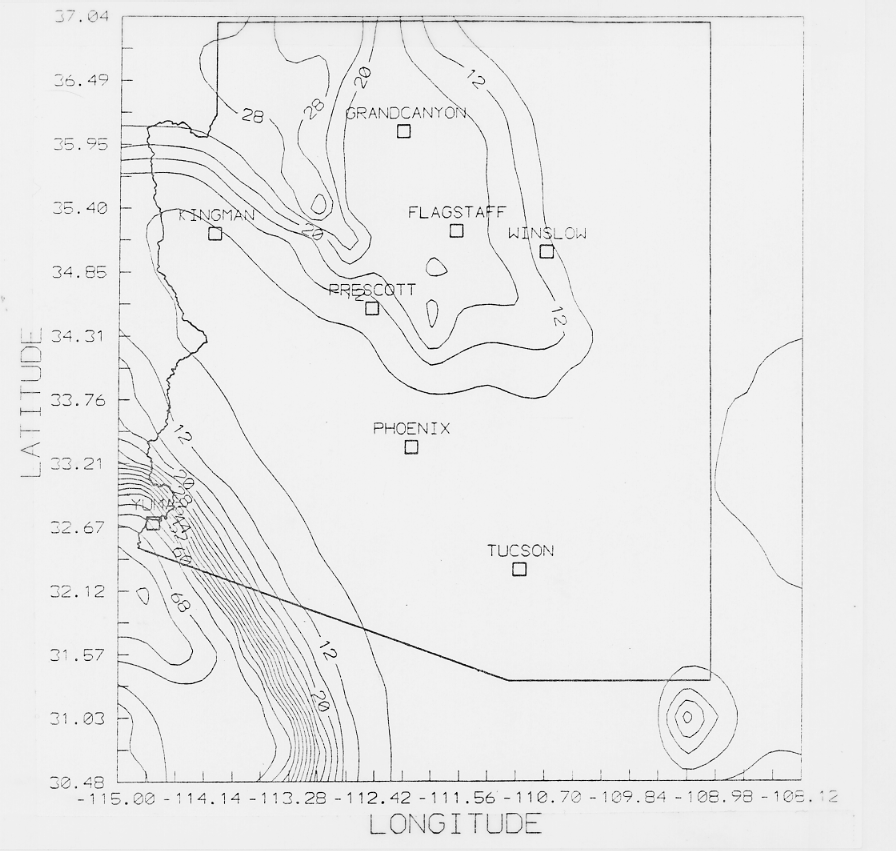
Figure 4: Probabilistic acceleration contour mapping for Arizona. Peak horizontal ground accelerations at bedrock expressed as a percentage of gravity and based on a 90% probability of not being exceeded in a 100 year time-frame (Bausch and Brumbaugh, 1994).
An acceleration contour map prepared for the State of Arizona (Figure 4) by Bausch and others (1993) (see Executive Summary), provides the acceleration data presented on the Flagstaff community maps (Plates 1-7, in-pocket). The data for the state acceleration map comprise a grid of approximately 4,000 specific data points for Arizona and the outlying regions. The data that lie within the areal extent of the Flagstaff community maps and the data point number (Bausch and Brumbaugh, 1994) are plotted on Plates 1 through 7. Values are expressed as the force of gravity, and represent the anticipated horizontal accelerations at bedrock in the area. Values for 50, 100 and 250 years are presented based on the generally accepted probability of 90-percent non-exceedance (or 10-percent chance of occurring) within the stated time frame.
The ground shaking maps presented in this report, if used together with inventories of potentially hazardous buildings, can help identify areas most likely to be damaged during an earthquake. The maps can also be used to identify areas where response capability operations, such as heavy rescue operations, will be vital in the case of an earthquake. The ground shaking maps should be used only for general planning purposes, and should not be used for specific building design requirements. Boundaries between the geologic units are compiled from small scale regional geologic publications and should be checked in the field if the site in question falls close to a geologic contact. In addition, the difference in ground shaking characteristics across these contacts should be taken as gradual, rather than an abrupt change in ground shaking intensity. Site-specific studies are required to adequately characterize the seismic parameters used in the design of a structure.
Modified Mercalli Intensity levels for Flagstaff may be calculated from the acceleration values presented from a combination of Richter's (1958) and Evernden and Thompson's (1988) empirical relationships for predicting intensity in terms of peak and root-mean-square (RMS) accelerations. Evernden and Thompson (1988) made a comprehensive study on the correlation between intensity and different seismic parameters. It can be assumed that RMS acceleration amplitudes for alluvial sites are about 70% of the corresponding peak ground acceleration values. The ratios of the RMS to peak amplitude for alluvial sites usually are higher than the ratios of the RMS to peak amplitude for stiff soil or rock sites. This is also consistent with Evernden and Thompson's (1988) recommendation of negative corrections for intensity scales for sites that are not underlain by alluvial materials. Richter (1958) reported an acceleration-intensity relationship based on the Modified Mercalli Intensity scale. Evernden and Thompson (1988) stated that Modified Mercalli Intensities are not a linear scale in terms of the level of ground shaking. They argued that the Rossi-Forel scale provides a better linear relationship. The relation between the two scales are qualitative.
Predicted intensity may have advantages over probabilistic bedrock accelerations for sites underlain by thick sequences of alluvium, such as the Flagstaff community. Alluvium is known to amplify the effects of ground shaking in both intensity and duration of shaking. Other parameters that increase reported earthquake intensities such as shallow ground water, building type and soil properties may be included in the conversion of the predicted bedrock acceleration values to predicted intensity.
3.2 Ground Failure
In areas where ground failure might occur, seismic intensity values may increase by one or two levels. Areas of suspected ground failure in the event of a large magnitude near-field earthquake, including liquefaction and slope instability, are discussed further in this report. Geologic effects caused by earthquakes are divided into two principal categories: primary effects and secondary effects. Primary effects are those caused by deep-seated forces in the earth and include fault rupture, tectonic uplift and subsidence. Secondary geologic effects are those caused by ground shaking and include liquefaction, compaction of sediment and various forms of mass movement (Youd, 1986).
3.2.1 Slope Stability
Earthquake induced landslides and rockfalls often result in a considerable portion of the damage associated with historical earthquakes. Falls of precarious rocks may be triggered by small earthquakes in steep terrain. In addition, earthquakes can trigger snow avalanches. Slopes in their natural condition are generally far less susceptible to instability than those that are altered by activities of man. Rockfalls were reported within the San Francisco Peaks area for both the 1906 and 1912 earthquakes (DuBois and others, 1982; Bausch and Brumbaugh, 1997).
Although the community is within a mountainous region of the Colorado Plateau, much of the region’s development is located in relatively flat-lying areas. However, the community is expanding rapidly, and has this continues more vulnerable areas may be developed. The current risk to the Flagstaff community as a result of earthquake-induced slope instability is expected to be low.
3.2.2 Liquefaction
Liquefaction occurs primarily in saturated, loose, fine to medium-grained soils in areas where the ground water table is 50 feet or less below the ground surface. When these sediments are shaken, such as during an earthquake, a sudden increase in pore water pressure causes the soils to lose strength and behave as a liquid. The resulting features are called sand boils, sand blows or "sand volcanoes". Liquefaction-related effects include loss of bearing strength, ground oscillations, lateral spreading, and flow failures or slumping (Yerkes, 1985). Ground failure caused by liquefaction is a major cause of earthquake damage. For example, most of the extensive damage caused by the 1964 Alaska and the 1989 Loma Prieta earthquake was a consequence of liquefaction.
Only very localized regions of the Flagstaff community meet the criteria for liquefaction to occur. Limited areas near the Rio de Flag and other small grabens, such as the Peaceful Valley and Foxglen areas, are underlain by relatively unconsolidated soil and shallow ground water.
3.2.3 Ground Rupture
Within the greater Flagstaff area there are several mapped neotectonic faults (Scarborough and others, 1983; Menges and Pearthree, 1983; Pearthree and others, 1983; Scarborough and others, 1986; and, Pearthree and others, 1996). An analysis of fault rupture hazard for a particular fault requires that the subject fault be located exactly, and that its potential for fault rupture be known, if only approximately. The historical record, is too short a time period to characterize the earthquake recurrence of most faults. Geologists use repeatedly offset stratigraphic or physiographic features along a fault to reconstruct the earthquake history of the fault. Approximate recurrence intervals for major earthquakes on that particular fault can often be obtained from the analysis of field data. These recurrence intervals are then used in engineering design and planning decisions. Unfortunately, these kinds of data are available for only a very few faults affecting Arizona. However, ongoing and future studies may produce reliable recurrence data within the next few years for more Arizona faults.
The analysis of fault rupture potential also assumes that a fault will slip along the same or nearly the same surface on which the fault last slipped. This assumption is generally true, based on observations from past surface-rupture events that show most ground ruptures do follow closely pre-existing fault traces. However, during an earthquake some sections of a fault surface may rupture, while others may not. In conducting a fault-rupture hazard analysis the worst-case scenario is assumed, that is, that during a moderate to major earthquake the subject fault surface will rupture in the area of study. An earthquake producing surface rupture along the segment of the Lake Mary fault in the Flagstaff vicinity could be associated with an earthquake of magnitude 7+. Surface rupture occurs when part of the stress released during an earthquake ruptures the fault plane at the earth's surface. In general terms, if the displacement is more than a few inches, structures that straddle the fault trace will be damaged or destroyed, since it is very costly to design structures to withstand large vertical or horizontal displacements.
Reconnaissance mapping of neotectonic faults in the Flagstaff community has recently been completed by Pearthree and others (1996) (Figure 5). All the neotectonic faults mapped within five miles of the Flagstaff community belong to the Cataract Creek fault system described in the Historic Seismicity section of this report. Mapped neotectonic faults within five miles of "downtown" Flagstaff are summarized in Table 3, below:
TABLE 3 - NEOTECTONIC FAULTS OF THE FLAGSTAFF AREA
|
Name |
Distance from Downtown Flagstaff (miles) |
Age of Youngest Event |
Fault Length (miles) |
Fault Orientation |
Maximum Credible Earthquake |
Characteristics |
|
Switzer |
0 |
Pliocene |
6 |
NNW |
6.8 |
Splays bisect downtown Flagstaff, including area of hospital. Forms symmetrical graben of Switzer Canyon. |
|
Lake Mary |
3 |
Holocene-Late Pleistocene |
15 + north splay |
NW, N |
7.3 |
Greatest displacement (±400 feet) of any fault in the San Francisco Volcanic Field. Forms asymmetric narrow graben that includes Upper and Lower Lake Mary. |
|
Drive In |
3 |
Pliocene-early Pleistocene |
2 |
NNW |
6 |
Forms narrow symmetrical graben underlying east Flagstaff and Foxglen areas. |
|
Peaceful Valley |
4 |
Pliocene-early Pleistocene |
4 |
NW, N splay |
6 |
Forms asymmetric graben underlying Bottomless Pits and Elden Golf Course area. |
|
Oak Creek Canyon-North |
5 |
early Pleistocene |
5 |
N, NE |
6.7 |
Normal fault, down to east. Underlies Woody Mtn. water well-field. |
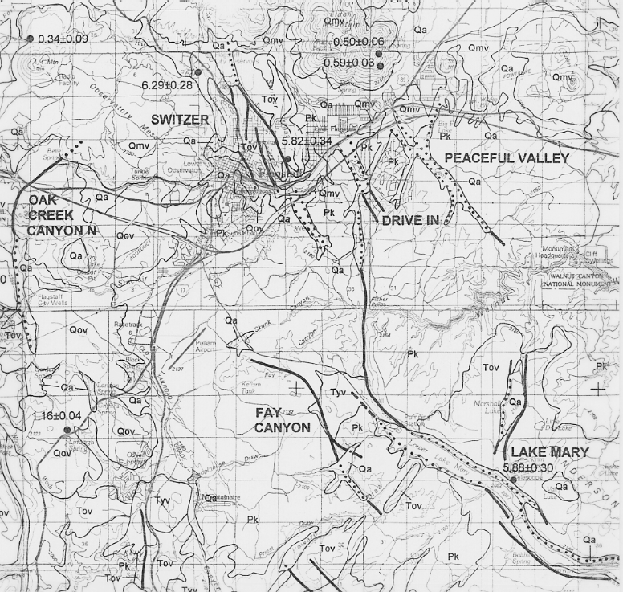
Figure 5: Reconnaissance neotectonic mapping in the Flagstaff region (from Pearthree and others, 1996).
While excellent fault hazard data collection opportunities are available for these neotectonic faults in the Flagstaff area, such as paleoseismological studies, existing data for the five known neotectonic faults may be summarized as follows:
Switzer Fault: Segments of this fault underlie developed portions of the City, including the Switzer Canyon area, the southwest flank of Cherry Hill crossing North San Francisco St. at about Fine Ave., and the vicinity of the Flagstaff Medical Center. Although the hazard to the community from primary ground rupture associated with this fault is the greatest of the area’s neotectonic faults, the Switzer fault has not ruptured since at least the early Pleistocene (750,000 to 1.5M years ago). The youngest offset rocks are Pliocene that have been dated at 5.8 million years old by potassium - argon dating analysis. A ground rupturing earthquake on this fault would produce an estimated magnitude 6.8 earthquake and damaging ground accelerations throughout the Flagstaff community. Such an earthquake could be a worst-case scenario for Flagstaff. In view of the age of most recent ground rupture, such an event is unlikely, however, mitigation of this threat is warranted for critical facilities. Critical facilities should not be sited across traces of this fault without determining its state-of-activity, recurrence interval and threat to the structure.
Lake Mary Fault: This fault has the greatest displacement, about 400 vertical feet, of any fault in the San Francisco Volcanic Field, and probably the greatest of any fault on the southern Colorado Plateau. A major ground rupturing earthquake on this fault would produce a magnitude 7.3 event only 3 miles south of Flagstaff. Such an event meets the criteria for the Maximum Credible Earthquake (MCE) for the Flagstaff community. Emergency planners and developers of critical facilities should include the MCE for planning scenarios. Damaging ground accelerations exceeding 100% of the force of gravity may occur in the Flagstaff community with great economic damage and possible loss of life. The impact to the community would be compounded by the destruction of the portion of the City’s water system located within the Lake Mary graben. Rupture directivity, such as observed in Kobe (1995) and Northridge (1994) could play a significant role. Directivity is a process whereby the earthquake energy is concentrated in the direction of fault rupture. A northward rupture of the Lake Mary fault would concentrate the energy released by the event towards the Flagstaff community.
Additional data collection opportunities, such as determining the recurrence interval and recency of ground rupturing earthquakes through paleoseismological studies, exist for the Lake Mary fault. A recent man-made road cut across the fault exposes possible colluvial wedges that may represent shedding of sediment from the upthrown block following major displacements. In addition to a displacement rate of 0.022 meters per one thousand years (Pearthree and others, 1996), the colluvial wedges may be evidence of Holocene displacement. Of the neotectonic faults discussed in this section, the Lake Mary fault is the only one to have fairly well-constrained earthquake foci that appear to lie along the fault traces. These include a swarm of earthquakes in 1979 and a ML 3.0 event in 1995.
Drive-In Fault: This fault underlies the Foxglen and east Flagstaff areas. The youngest event on this fault is estimated to be Pliocene to early Pleistocene in age. The length of this fault is relatively short, about 2 miles, and subsequently its MCE is magnitude 6. The fault forms a small symmetrical graben in the Foxglen area that is occupied by playing fields and bounded to the southwest by a fire station and high school. Primary ground rupture on this fault threatens Interstate 40. Sparse data are available for this fault, however, it is warranted that critical facilities determine and mitigate threats from this fault.
Peaceful Valley Fault: This northwest trending fault graben underlies the Bottomless Pits region and Elden Golf Course near the rapidly developing Country Club region of easternmost Flagstaff. The fault length is about 4 miles and it has the potential to produce a magnitude 6 earthquake. The youngest event may be Pio-Pleistocene in age (Pearthree and others, 1996). Primary ground rupture on this fault threatens Interstate 40, industrial development north of I-40 and residential development, including multi-unit apartments and hotels south of I-40. However, given its most recent ground rupturing event about 5 million years before present, determination and mitigation of the threat from this fault is warranted only for critical facilities.
Oak Creek Canyon-North Fault: This fault is the northern neotectonic continuation of the Oak Creek fault that forms Oak Creek Canyon. Oak Creek Canyon formed as a result of preferential erosion along fault gouge created by movement along the Oak Creek fault. However, only the northern portion appears to show geologically recent (post-Pliocene) displacement. This northward trending fault bisects Interstate 40 and the City’s Woody Mountain Water Well Field. A Naval Observatory is located just east of the fault. Rupture of this 5 mile long segment would produce an estimated magnitude 6.7 earthquake. Threat determination and necessary mitigation, as with all neotectonic faults, should be performed for critical facilities.
4.0 PREPARATION OF GROUND SHAKING MAPS FOR THE FLAGSTAFF COMMUNITY
Plates 1 through 7 were prepared to illustrate the probabilistic peak ground accelerations at bedrock, and ground shaking units based on geologic-type.
4.1 Peak Ground Acceleration Mapping for the Flagstaff Community
The Peak Ground Acceleration (PGA) mapping represents peak horizontal acceleration of the ground at bedrock. The approach of representing peak horizontal ground acceleration on bedrock is a common and widely used method of showing ground accelerations. Indeed it has been utilized in national reports (Algermissen and others, 1982; 1990) and on one other report in Arizona (Euge and others, 1992). In fact, such an approach is often the only feasible one because of a lack of adequate data on spectral accelerations on different rock types. Over the last decade more rock type acceleration numbers have become available through the installation of accelerometers in the western U.S. At present, however, Arizona is sadly lacking in such data. The National Hazard Maps and subsequently the Uniform Building Code, which is based upon the national maps prepared periodically by the U.S. Geological Survey, are a result of probabilistic acceleration mapping. The construction of probabilistic acceleration maps are a result of three types of basic input parameters:
1) Attenuation of ground shaking with distance from the earthquake source;
2) Frequency of earthquakes within an area or region, termed recurrence; and
3) The character and extent of regions and faults that generate earthquakes.
Several probabilistic assessments have been performed for the study area (Table 4).
|
FLAGSTAFF |
TABLE 4 - COMPARISON OF PROBABILISTIC ACCELERATION VALUES FROM SEVERAL STUDIES |
||
|
50 YEAR |
100 YEAR |
250 YEAR |
|
|
Arizona Earthquake Information Center (Bausch and Brumbaugh, 1994) |
11 |
17 |
26 |
|
Arizona Department of Transportation (Euge and others, 1992) |
20 |
N/A |
42 |
|
Building Seismic Safety Council (Algermissen and others, 1990) |
8 |
N/A |
23 |
|
1996 National Seismic Hazard Maps (Frankel and others, 1996) |
10 |
N/A |
N/A |
|
Arizona Geological Survey (Pearthree and others, 1996) |
7-13 |
10-18 |
17-26 |
|
Accelerations are expressed as a percent of gravity at bedrock, based on 90% non-exceedance. |
|||
The studies listed above utilized several different methods in determining the probabilistic accelerations for northern Arizona. Bausch and Brumbaugh (1994), Euge and others (1992), and Pearthree and others (1996) all represent regional reports, while Algermissen and others (1990) and Frankel and others (1996) represent the national mapping of the U.S. Geological Survey. The regional reports all utilized the computer program SEISRISK III (Bender and Perkins, 1987), and include line sources (faults), as well as historic seismicity. However, the only study to utilize smaller faults, such as Lake Mary, as line sources, rather than only major Arizona faults, was that by Pearthree and others (1996). They found that the influence of these smaller sources, due mostly to their low Maximum Credible Earthquakes, were a negligible contribution to the acceleration values. The high values obtained by Euge and others (1992) are a result of defining a relatively small San Francisco Volcanic Field Source Zone with a relatively high rate of seismicity that included the three largest northern Arizona earthquakes (M 6.0-6.2; 1906-1912). However, the results of recent work by Bausch and Brumbaugh (1997) indicate at least two of the events (1906 and 1912), as well as the 1993 Cataract Creek earthquake sequence, did not occur within their defined source zone, and therefore, new acceleration values would be lower.
A new method of determining probabilistic accelerations was utilized during preparation of the most recent national maps by Frankel and others (1996). Rather than defining seismogenic source zones, this method moves a one-square kilometers grid across the historic seismicity database, thereby providing a running average of the occurrence values for the region. The primary advantage of this method is in eliminating the uncertainties in defining source zone boundaries. For example, the near co-locations of the 1906 M 6.2 and the 1993 M 4.9&5.4; the 1910 M 6.0 and the 1959 M 5.0; and the 1912 M 6.2 and 1892 M 5.0, would result in locally significant increases in acceleration values.
Values of horizontal accelerations exceeding 0.10 g, or 10-percent of the force of gravity, are generally accepted as being destructive to weakly constructed structures (Richter, 1958). As can be observed from these data, the predicted seismic accelerations for the Flagstaff community are anticipated to be damaging to many types of construction. Figure 6 was prepared to compare the acceleration values with other Arizona communities that are considered high (Yuma) to low (Phoenix). The anticipated accelerations for the San Francisco region, which has the highest earthquake risk in the U.S., are also illustrated for comparison.
4.2 Effects of Local Geology
An analysis of ground shaking intensity reported during historic earthquakes affecting Arizona indicated differences in ground shaking based on the underlying geology (Morrison and others, 1991). For these studies regarding Arizona key communities, geologic earth units that occur throughout the state were categorized into three groups: 1) alluvium (map symbol-Q); and, 2) sedimentary and volcanic bedrock (map symbol-S/V). The analysis of historic intensities indicated higher reported intensities for alluvial sediments compared to bedrock areas, as well as slightly higher intensities noted for sedimentary and volcanic rock as compared to areas underlain by granitic igneous intrusive rock. For example, during the 1906 earthquake, most damage was reported for buildings within the "new-town" site underlain by young alluvium and shallow ground water associated with the Rio de Flag, than for the "old-town" site located at the foot of Mars Hill (Bausch and Brumbaugh, 1997). Plates 1 through 7 (In-Pocket) illustrate the areal extent of the basic geologic ground shaking types transferred from regional published geologic maps.
Figure 6: Acceleration probability expressed as a percentage of the force of gravity against time. The graph illustrates the relatively high values anticipated for the Yuma community in comparison with moderate (Flagstaff) and low (Phoenix) Arizona communities. San Francisco, the U.S. city with the highest earthquake risk, is shown for comparison. Ten-percent of the force of gravity is generally accepted as the onset of damage to weakly constructed structures (Richter, 1958).
4.2.1 Alluvium (Q): Alluvial materials associated with the Rio de Flag and other drainage systems are shown on the plates prepared for this study. The alluvium (Q) consists of moderately-well to poorly consolidated sand, silt and gravel. Alluvium is Holocene to middle Pleistocene in age (Reynolds, 1988).
4.2.2 Sedimentary and Volcanic Rock (S/V): The sedimentary rocks underlying the region consist of Permian limestone of the Kaibab Formation. The volcanic rock includes basalt and dacite, as well as fresh cinders and pyroclastic deposits. Ages of volcanics range from Miocene to Holocene. However, the largest areal extent is underlain by Plio-Pleistocene volcanics that exhibit a generally younging trend to the northeast. Very young, less than 1,000 year-old volcanics, underlie the Sunset Crater region northeast of Flagstaff.
4.2.3 Shallow Ground Water: Shallow ground water can increase the expected seismic intensity values at a site. For most earthquake scenarios, seismic intensity values increase by one level on the Modified Mercalli Intensity scale (see Table 2) in those areas of the Flagstaff community where shallow ground water is present. The accuracy of these interpretations are dependent on the accuracy of the ground water data available for Flagstaff.
An increase of one level in the expected seismic intensities for a given scenario earthquake may be applied to any area of the city where shallow ground water (less than 30 feet) may be reported in the future.
5.0 HISTORIC SEISMICITY
The Flagstaff community has experienced several damaging earthquakes from seismogenic sources within northern Arizona.
• The region between Flagstaff and the Arizona-Utah border has produced seven M ³ 5.0 historic earthquakes.
• The three largest occurred within a six year period (1906-1912).
• 1906, January 25, MS 6.2
• 1910, September 24, MS 6.0
• 1912, August 18, MS 6.2
• Most well-instrumentally located earthquakes have occurred within a northwesterly trending belt of seismicity beginning southeast of Flagstaff, trending through the Grand Canyon, and apparently joining with a northward trending belt of seismicity at the Arizona-Utah border. This has been termed the Northern Arizona Seismic Belt (NASB) (Brumbaugh, 1987) (Figure 7).
Earthquakes are felt in Flagstaff about once per year. Part of the reason for this is that the Colorado Plateau transmits earthquake energy relatively efficiently. However, the primary reason is Flagstaff's location within the NASB. The most recent strongly felt earthquakes (MMI V-VI in Flagstaff) belonged to the 1993 Cataract Creek earthquake sequence of April and May. This sequence included both a mb 4.9 foreshock and mb 5.4 mainshock that were both widely felt in Flagstaff. More recently, earthquakes ranging up to ML 3.7 struck the Red Mountain and Lake Mary regions. These later events were only slightly felt in Flagstaff. In addition, earthquakes centered at the South Rim of the Grand Canyon ranging up to ML 4.0 have occasionally been felt in Flagstaff.
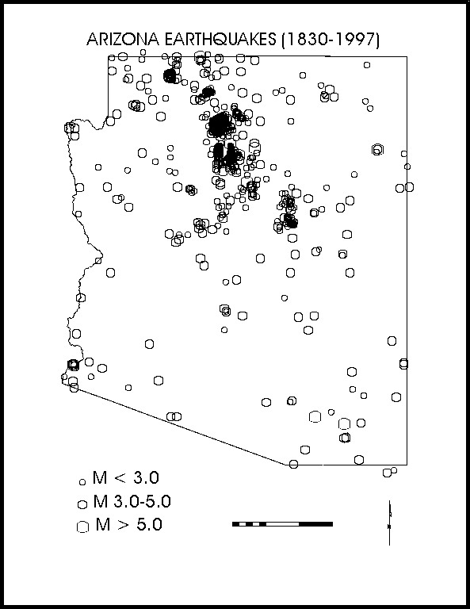
Figure 7: Seismicity of Arizona 1830 to 1993 showing the Northern Arizona Seismic Belt (NASB) (Arizona Earthquake Information Center Archives).
5.1 Earthquake of January 25, 1906, Thursday, 1:32:30 p.m. (local time), MS 6.2
This earthquake occurred slightly more than 40 miles northwest of Flagstaff. The epicenter was recently revised by Bausch and Brumbaugh (1997) based on new instrumental and felt report data. The new location is within the vicinity of the 1993 Cataract Creek earthquake sequence and the epicenter is within the Cataract Creek fault system (Figure 8).
An interesting observation of the damage reports from Flagstaff for this earthquake are that the reports of building damage are all within the "new town" site rather than the "old town" region. Perhaps the difference is related to the basaltic bedrock foundation of the old town site compared to the alluvial soils that underlie new town about one mile to the east. As a trained and experienced observer, the observations reported by A.E. Hackett (Flagstaff Weather Bureau), were given greater consideration, below:
• A severe earthquake shock was felt at 1:32:30 p.m. The wave apparently came from the NNW and its duration was about 20 seconds several persons report having heard a rushing or roaring sound for a few moments preceding the shock. A few chimneys were shaken down, plastering was shaken from ceilings, crockery was thrown from shelves and clocks were stopped. At the public school the children were thrown into a panic and school was dismissed for the day (A.E. Hackett, Flagstaff Weather Bureau).
5.2 Earthquake of September 23, 1910, Friday, 9:06 p.m. (local time), MS 6.0
This earthquake appears to have occurred about 27 miles north of Flagstaff, within the San Francisco Volcanic Peaks. Work crews building a dam north of the peaks reported very severe effects and feeling numerous foreshocks and aftershocks. The work crews describe feeling 52 shocks on Saturday the 10th, thirteen days prior to the main shock. These felt reports indicate that they were very close to the epicentral region, and perhaps at a location that may trap seismic energy, such as along a fracture system. The epicenter for this earthquake is at the junction of the Cataract Creek and Mesa Butte fault systems (Figure 8).
Figure 8 - Northern Arizona seismicity and fault systems.
5.3 Earthquake of August 18, 1912, Sunday, 2:12 p.m. (local time), MS 6.2
This earthquake may have occurred closer to Flagstaff than the other two historic M 6+ northern Arizona earthquakes (Figure 8). The revised epicenter falls about 12 miles northwest of Flagstaff (Bausch and Brumbaugh, 1997). The revision was based on new instrumental data, as well as new and revised interpretations of felt report data. The felt report from the Lockett Tanks region north of Flagstaff indicates the most severe effects from the earthquake. However, the effects represent those reported by a single observer, and no substantiation was found. In addition, the observer appears to exaggerate throughout his report including a claim of ‘a rent in the earth 30 miles in length’ and ‘rocks sent up in the air’. Reports of smoke and fire may be related to the typical late-Summer monsoon season lightning. The Coconino Sun published the article containing the report from the Lockett Tanks area twelve days after the earthquake, below:
• Volcanic eruption reported by Indians. Earthquake in Lockett Tank Country made a rent in earth for thirty miles--black smoke and steam arise from interior of earth (The Coconino Sun, 8/30/12).
• Considerable excitement was caused last Friday by the report brought in by a Navajo Indian named Tsi-ma-li from the Lockett Tank Country, that at the time of the earthquake a huge volume of black smoke and fire Came up out of a rent in the earth. He reported that rocks were sent up in the air and that boulders were shaken from the cliffs to go crashing down into canyons. The rent in the earth he said was from a few inches to a foot wide, extending from Lockett Tanks to Coconino Mountain a distance of over thirty miles. Where the earth shook and made waves like the sea, Tsi-ma-li said "Indian's hearts died in them and they left". (The Coconino Sun, 8/30/12).
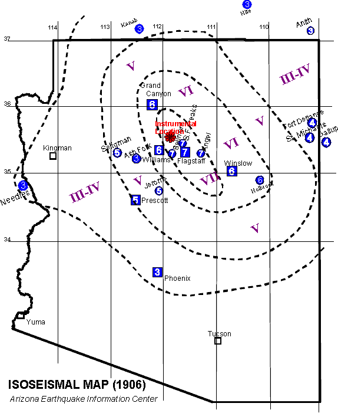
Figure 9 - Isoseismal Map of 1906 Earthquake.
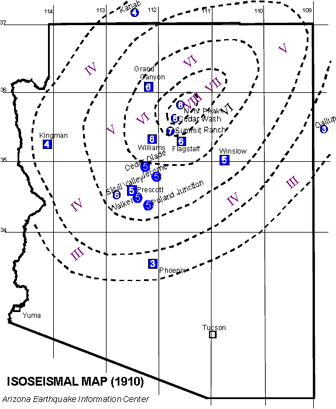
Figure 10 - Isoseismal Map of the 1910 Earthquake
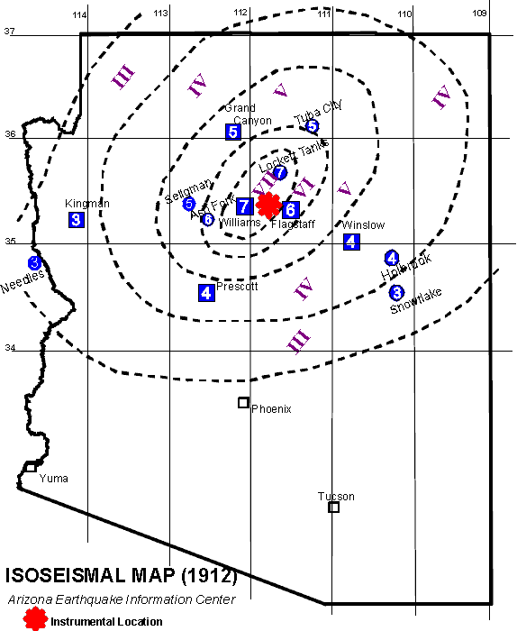
Figure 11 - Isoseismal Map of 1912 Earthquake
6.0 EARTHQUAKE SOURCES
As mentioned previously, most northern Arizona seismicity falls within the northwest trending Northern Arizona Seismic Belt (NASB) (Figure 7). Surficial fault systems on the southern Colorado Plateau appear to reflect the underlying structures of the Precambrian basement rock (Shoemaker and others, 1978). Most well-located earthquakes and well-defined focal solutions indicate that the Colorado Plateau is extending in a northeast-southwest direction along northwesterly trending normal faults. Subsequently, the northwesterly trending Cataract Creek fault system appears to control the earthquakes that occur in the vicinity of Flagstaff. More distant earthquake sources, such as the Hurricane and Toroweap faults along the western margin of the Colorado Plateau, may produce localized damage in the Flagstaff community. However, the Cataract Creek fault system appears to control both the Maximum Probable and Credible (MPE & MCE) design earthquakes for the Flagstaff community.
6.1 Cataract Creek Fault System
Northern Arizona experienced mb 4.9 and 5.4 earthquakes on April 25 and 29, 1993, respectively. These events occurred within a sparsely populated region approximately 3 miles northwest of Valle, Arizona (pop. 75). The revised epicenter of the 1906 earthquake co-locates with these significant and well-located Arizona earthquakes (Figure 8). The location of these events are within the Cataract Creek fault system. The Cataract Creek fault system consists of a 200 km long group of northwest trending high angle faults extending from the western Grand Canyon region southeastward to the Mogollon Plateau of Arizona. Age of faulting is difficult to estimate for most of the faults of the system because the surface traces cut eroded Paleozoic rocks and lack younger dateable deposits. No historic surface rupture has been identified with any of the faults, but study of historic seismicity indicates that at least some of the faults of the system are active. This would include the Cataract Creek fault proper, as well as the Chavez Mountain fault and the Lake Mary fault near Flagstaff.
A study of first motion readings for the mb 4.9 and mb 5.4 events resulted in similar solutions, both indicating predominantly normal faulting (Bausch and Brumbaugh, 1994). Of the resulting nodal planes, preference is given to the northwesterly oriented planes, parallel to the known fractures of the Cataract Creek fault system. These results are compatible with results of waveform modeling techniques (Lay and others, 1994) of these two earthquakes. An aftershock study of the 1993 earthquake sequence indicated northwest trending locations for three days following the main shock, while later events appeared to follow a northeasterly trend (Sanders, 1996). This may indicate a migration of activity onto the northeasterly trending Bright Angel fault system (Figure 8).
7.0 DESIGN EARTHQUAKE
The design earthquakes for the Flagstaff area are the maximum credible and probable earthquakes presented in Table 5. Because most earthquakes are believed to originate as a result of fault breaks, the rock motion at any particular site will depend on: (1) the amount of energy released along the fault during the earthquake; and (2) the distance of the site from the zone of energy release. In general the amplitude of these motions decrease with increasing distance from the zone of energy release, although other factors, such as geologic structure and orientation, will also have some effects (Seed and others, 1969). The magnitude of an earthquake is a convenient indication of the amount of energy released when a fault breaks. Because the magnitude, M, of an earthquake and the amount of energy released, E, are related by:
log E = 11.4 + 1.5 M
an increase of 1 unit on the magnitude scale corresponds approximately to a 30-fold increase in the amount of energy released. Another factor that needs to be considered is the depth of focus or hypocenter. Depths of earthquakes in California and northern Mexico are usually 6 to 15 miles (10 to 25 km) and are considered to be shallow. For events this shallow the hypocentral and epicentral distances are not appreciably different when the distance between the site and causative fault exceeds about 40 miles (60 km) (Seed and others, 1969). In the case of the maximum probable design earthquake the causative fault would be at least 40 miles (60 km) from the study area. The length of the fault break must also be considered, as the site to fault distance and duration of shaking are dependent on the length and direction of rupturing. In the case of the maximum probable earthquake for the Flagstaff area the causative faults are short in length relative to the distance of the site from the fault. Therefore, the distance of the site from the fault can be expressed by the epicentral distance for the Flagstaff area.
In relating the design earthquake to engineering seismology the following parameters must be considered: (1) magnitude of the event; (2) maximum amplitude of the horizontal acceleration; (3) duration of strong motion; and (4) the predominant frequency or period of motion of the site (Haley and Hunt, 1974). These parameters are given in Table 5 for MMI of IX-X and X-XI events, the MPE and MCE, respectively. The design parameters are calculated from the acceleration curves and from the predominant period calculations of Seed and others (1969). These equations result in an increase in period of the earthquake with increasing distance from the epicenter.
7.1 Impact of the Design Earthquake on the Flagstaff Community
The following compilation of potential earthquake hazards are based on the response of the materials underlying Flagstaff to the design earthquake parameters listed in Table 5.
A) Within local regions of Flagstaff that is underlain by alluvial deposits and areas of shallow ground water, the potential exists for greater damage than normal to structures. The earthquake damage index to structures increases with increasing thickness of the alluvial layer and softness (compaction) of the subsoil (Kanai, 1983).
B) The natural period of one story wooden structures ranges (i.e. most single-family residences) from 0.2 to 0.3 seconds (Kanai, 1983). The predominant period of the MPE has a value of 0.6 which inhibits the development of resonance (period of structure = period of earthquake) and the accompanying increase in vibration and destruction. Multi-story buildings will display higher periods of vibration making resonance more probable. It is important to note that the MCE (Table 5) displays a period value conducive to the development of resonance in single story wooden structures. However, the predominate period of individual buildings may vary depending on design and construction materials.
C) Documented earthquake damage studies indicate brick buildings experience an overall increase in damage on soft ground with an increase in the number of stories. The thickness of the sediment package is a controlling factor in the expected damage to concrete structures.
D) However, thickness can be offset by variations in the natural density of the material underlying a specific reinforced concrete structure. An increase in the softness of the ground causes a concomitant increase in the extent of damage to reinforced concrete buildings (Kanai, 1983). The demonstration of low values for penetration tests during geotechnical investigations are a suitable measure of ground softness.
E) By using the empirical equation of the natural period for reinforced concrete buildings a range of periods for different heights of structures can be developed:
1) 1 story = .06 - .12 seconds
2) 2 story = .12 - .21 seconds
3) 3 story = .21 - .30 seconds
4) 4 story = .30 - .40 seconds
5) 5 story = .40 - .60 seconds
6) 8 story - 10 story = .60 - .90 seconds
The duration of motion and the period of .55 seconds resulting from earthquakes in Tokyo provided suitable conditions for the development of resonance in 5 story structures (Kanai, 1983). The MPE has a predominate period of 0.6 sec., thereby, resulting in resonance to 5-story structures. However, the MCE predominant period of 0.22 seconds may result in resonance in concrete structures of about 3-stories. This table should be used as a guide, a more precise value of predominant period should be determined by a structural engineer taking into account the specific building design and construction.
TABLE 5
DESIGN EARTHQUAKES
• MAXIMUM PROBABLE EARTHQUAKE: INTENSITY VII-IX
• ML = 6.2
• DISTANCE FROM EPICENTER = ±10 km
|
CHARACTERISTICS |
DESIGN PARAMETER |
|
A. Predominant period of vibratory motion |
0.60 sec |
|
B. Maximum horizontal accelerations |
.40 g (40%) |
|
C. Duration of motion |
10 - 20 sec |
Predicted characteristics of ground motion for Flagstaff, Arizona. Caused by an earthquake of similar magnitude as the 1906, 1910 and 1912 earthquakes. Located on the Cataract Creek fault system within 10 km (6 miles) of Flagstaff. No primary ground rupture would be expected with the MPE.
• MAXIMUM CREDIBLE EARTHQUAKE: INTENSITY X-XI
• ML = 7.3
• DISTANCE FROM EPICENTER = 5 km
|
CHARACTERISTICS |
DESIGN PARAMETER |
|
A. Predominant period of vibratory motion |
.22 sec |
|
B. Maximum horizontal accelerations |
1.2 g (120%) |
|
C. Duration of motion |
20 - 30 sec |
Predicted characteristics of ground motion for Flagstaff, Arizona produced by a 25 km rupture along the Lake Mary fault located about 5 km south of Flagstaff (calculated from Seed and others, 1969).
8.0 VULNERABILITY OF THE FLAGSTAFF COMMUNITY TO SEISMIC HAZARDS
This section assesses the earthquake vulnerability in Flagstaff to structures and facilities of the United States, and are based upon past earthquake performance in the U.S. Beyond the scope of this study are the effects of the MCE and MPE on particular structures within the Flagstaff community.
Although it is not possible to prevent earthquakes from occurring, their destructive effects can be minimized. Comprehensive hazard mitigation programs that include the identification and mapping of hazards, prudent planning and enforcement of building codes, and expedient retrofitting and rehabilitation of weak structures can reduce significantly the scope of an earthquake disaster.
Various geologic phenomena that can cause property damage and loss of life are triggered by earthquakes. These hazards include ground shaking, fault rupture, landslides, and foundation failures caused by liquefaction or subsidence. Earthquakes can also cause a variety of localized, but not less destructive hazards such as urban fires, dam failures, and toxic chemical releases.
This section identifies and discusses the opportunities available for seismic upgrading of existing development and capital facilities, including potentially hazardous buildings, utilities, transportation infrastructure, and other critical facilities. Many of the issues and opportunities available to the city apply to new development, redevelopment and infilling. Issues involving rehabilitation and strengthening of existing development are decidedly more complex given the economic and societal impacts inherent to these issues.
Prioritizing rehabilitation and strengthening projects requires that the city consider where its resources would be better spent to reduce earthquake hazards in the existing development, and how the proposed mitigation programs can be implemented so as not to cause undue hardship on the community. The hazard evaluation is intended to define the scope of the problem. Rehabilitation programs should target, on a priority basis, potentially hazardous buildings, critical facilities, and high-risk lifeline utilities. Rehabilitation issues can be best addressed by the city.
8.1 Ground Shaking Parameters
The level of seismicity within the Flagstaff area is moderate, however, this may be a result of historically poor seismograph station coverage for the region and does not take into account damaging earthquakes outside of the region, such as along the Hurricane or Toroweap faults along the western margin of the Colorado Plateau.
If the maximum credible event were to occur on the Lake Mary fault, the effects to the Flagstaff area could be extensive. These effects include extensive failure of unreinforced masonry construction. Resonance could develop in reinforced concrete structures that are 3 stories in height. The duration of strong motion (20-30 seconds) and the maximum horizontal accelerations (1.2 g) will be great enough to cause damage to other structures.
8.2 Hazardous Buildings and Structures
Most of the loss of life and injuries that occur during an earthquake are related to the collapse of hazardous buildings and structures. FEMA (1985) defines a hazardous building as "any inadequately earthquake resistant building, located in a seismically active area, that presents a potential for life loss or serious injury when a damaging earthquake occurs." Building codes have generally been made more stringent following a damaging earthquake. However, a large percentage of structures in Flagstaff built prior to improved building codes, have not been upgraded to current building code standards, and may, therefore, be potentially hazardous during an earthquake.
Damage to buildings is commonly classified as either structural or non-structural. Structural damage means the building's structural support has been impaired. Structural support includes any vertical and lateral force resisting systems, such as the building frames, walls, and columns. Non-structural damage does not affect the integrity of the structural support system. Examples of non-structural damage include broken windows, collapsed or rotated chimneys, and fallen ceilings. During an earthquake, buildings get thrown from side to side, and up and down. Heavier buildings are subjected to higher forces than lightweight buildings, given the same acceleration. Damage occurs when structural members are overloaded, or differential movements between different parts of the structure strain the structural components.
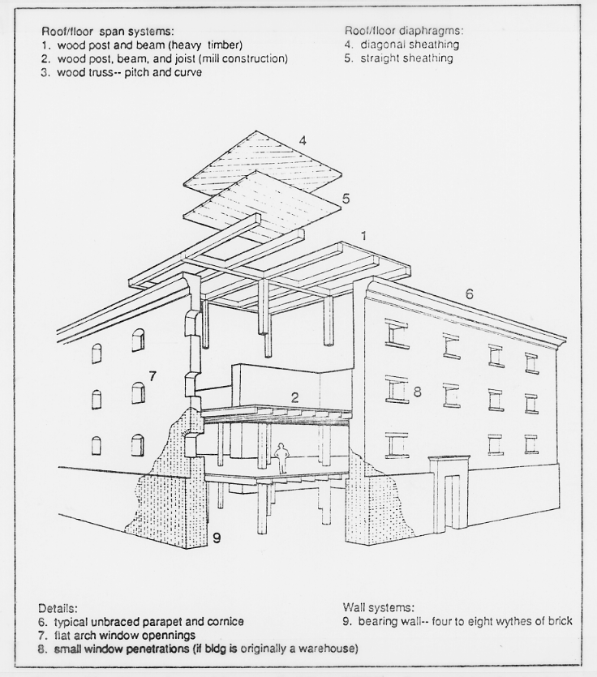
Figure 12: Unreinforced Masonry Building (URM). Prepared by the Applied Technology Council for the Federal Emergency Management Agency (1988), Rapid Visual Screening of Buildings for Potential Seismic Hazards: A Handbook: Earthquake Hazards Reduction Series 41, FEMA 154.
Larger earthquakes and longer shaking durations tend to damage structures more. The level of damage resulting from a major earthquake can be predicted only in general terms, since no two buildings undergo the exact same motions during a seismic event. Past earthquakes have shown us, however, that some buildings are more likely to perform more poorly than others.
Unreinforced masonry buildings (URMs) (see Figure 12), based on observations from past earthquakes, are prone to failure due to inadequate anchorage of the masonry walls to the roof and floor diaphragms, due to the limited strength and ductility of the building materials, and sometimes due to poor construction workmanship. These buildings are generally old, some dating to even the 19th century. Unless the buildings have been appropriately reinforced and strengthened, an earthquake may cause irreparable damage, and even collapse of some of these URMs, with the resultant threat to human life and property. Deterioration of the mortar (often of lime and sand with little or no cement, having very little shear strength) and of the wood framing as a result of weather exposure may also contribute to the weakening and poor performance of these structures during an earthquake. Parapets and cornices that are not positively anchored to the roofs may fall out.
Wall diaphragms are generally made of wood. These diaphragms are therefore very flexible, allowing large out-of-plane deflections at the wall transverse. This large drift can cause the masonry walls to collapse. Some tall URM buildings have thin walls that may buckle out-of-plane under severe lateral loads. If the wall is a non-load bearing wall, it may fail; collapse of a load-bearing wall will result in partial or total collapse of the structure.
Although URMs have been assumed to be the most hazardous buildings in a community, the collapse of URM buildings during an earthquake, in general, does not pose as much a hazard to loss of life as the collapse of other types of structures. Several other more numerous building types are also known to perform poorly during moderate to strong earthquakes, although they have not been targeted for upgrading and strengthening. Of these, soft-story (Figure 13) buildings (those with a story, generally the first floor, lacking adequate strength or toughness, due to few shear walls, i.e., buildings where the first floor is the garage) are of particular concern. The Northridge Meadows apartment collapse that killed 16 people during the January 17, 1994 Northridge earthquake was a building that included a mixture of residential units and parking garage on the first story (EERC, 1994).
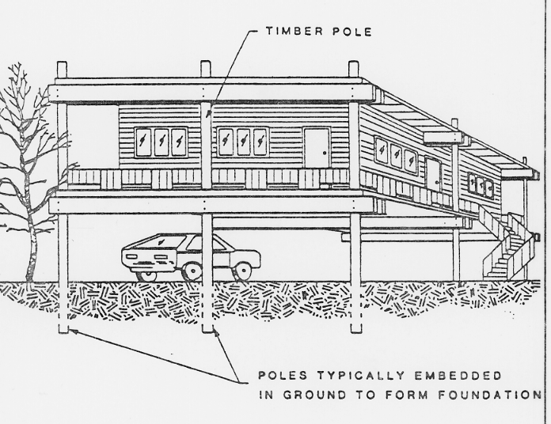
Figure 13: Soft story-timber pole construction. Prepared by the Applied Technology Council for the Federal Emergency Management Agency (1988), Rapid Visual Screening of Buildings for Potential Seismic Hazards: A Handbook: Earthquake Hazards Reduction Series 41, FEMA 154.
The walls with large door openings common to garages have almost no resistance to lateral forces. If a second or more stories sit on top of the garage, the building may sustain significant amounts of damage, and even collapse during an earthquake. A soft-story building can also be one that has large window openings for display purposes on the first floor.
Some soft-story buildings have a timber pole construction. The poles are often subject to wood deterioration with exposure to the elements. This deterioration, if unchecked, may also contribute to unsatisfactory seismic performance.
Structural damage to wood frame structures often results from a lack of, or inadequate connection, between the superstructure and the foundation; these buildings may slide off their foundations, with consequent damage to plumbing and electrical connections. Unreinforced masonry chimneys may also collapse. These types of damage are generally not life threatening, although they may be costly to repair. Wood frame buildings with stud walls generally perform well in an earthquake, unless they have no foundation or have a weak foundation constructed of unreinforced masonry or poorly reinforced concrete. Damage to wood frame buildings is generally limited to cracking of the stucco, which in fact, dissipates much of the earthquake's induced energy. The collapse of wood frame structures, if it happens, generally does not generate heavy debris; but rather, the wood and plaster debris can be cut or broken into smaller pieces by hand-held equipment and removed by hand in order to reach victims (FEMA, 1988).
Partial or total collapse of buildings where the floors, walls and roofs fail as large intact units, such as large precast concrete panels, cause the greatest concern in terms of life loss and difficulties in victim rescue and extrication (FEMA, 1988). Thousands of people have died as a result of collapse of these kinds of buildings during earthquakes, such as in Mexico City (1985), Armenia (1988), Nicaragua (1972), El Salvador (1986), and Philippines (1990). Many of the parking structures that failed spectacularly in Northridge (1994) consisted of pre-cast components (EERC, 1994).
The heavy debris that results from collapse of these types of buildings requires heavy mechanical equipment to remove the rubble. Location and extrication of victims trapped under the rubble is generally a dangerous process that requires equipment to tunnel and lift heavy debris Extrication of trapped victims within the first 24 hours after the earthquake becomes critical for victim survivability. In most instances, however, the planning resources available to procure the necessary equipment for victim rescue are ill-defined to non-existent. However, the implementation of the establishment of Heavy Urban Search and Rescue teams as recommended by FEMA (1988) will improve victim extrication. Buildings that are more likely to generate heavy debris in case of failure need to be identified, so that appropriate mitigation and planning procedures are defined prior to an earthquake.
Precast concrete frame buildings vary in their performance during earthquakes, dependent in part on the strength and toughness of the details connecting the structural elements (Figure 14). If poorly designed connections between prefabricated elements fail, the damage and loss of life can be significant. Precast frames are often weakened due to a combination of the accumulated stresses that may result from shrinkage and creep, and due to stresses incurred during transportation. Vertical support may fail if the building was designed with an inadequate bearing area and/or with insufficient connections between floor elements and columns. Corrosion of the metal connectors between prefabricated elements may also occur weakening the structure. Multi-story concrete and reinforced masonry buildings with concrete floor slabs may collapse with the floor slabs falling, nearly intact, one on top of the other, becoming closely stacked ("pancake" style of failure). The floor slabs prevent access to, and extrication of victims. Given the large size and weight of these slabs, some weighing up to 250 tons, the slabs generally need to be cut into smaller segments prior to removal by heavy cranes. The cutting of these slabs is a time-consuming process that requires breaking the concrete and cutting the reinforcing steel.
Tilt-up buildings have concrete wall panels, often cast on the ground, or fabricated off-site and trucked in, that are tilted upward into their final position. The weak connections and anchors have been observed to pull out of the walls during an earthquake, causing the floors or roofs to collapse. A high rate of failure was observed for this type of construction in the 1971 Sylmar, California earthquake. Tilt up buildings may generate heavy debris if concrete wall panels fail.
Reinforced masonry buildings often perform well in moderate earthquakes if they are adequately reinforced and grouted, and if sufficient diaphragm anchorage exists. Poor construction workmanship, resulting in ungrouted and unreinforced walls may lead to failure of the building during a large earthquake. Insufficient reinforcement can also result in heavy damage to walls, while lack of positive connections of the floor and roof diaphragms can also result in structural damage.
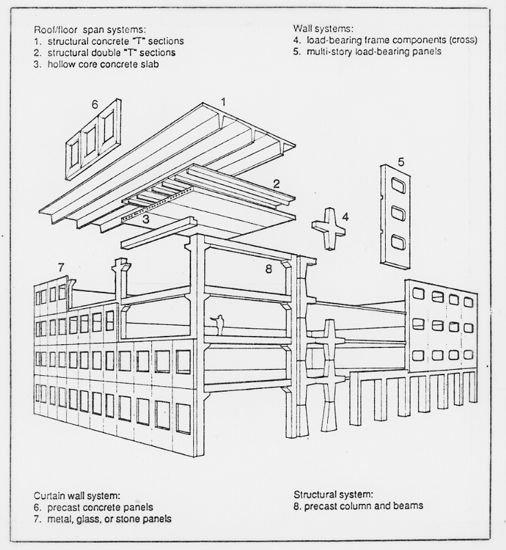
Figure 14: Precast concrete frame construction. Prepared by the Applied Technology Council for the Federal Emergency Management Agency (1988), Rapid Visual Screening of Buildings for Potential Seismic Hazards: A Handbook: Earthquake Hazards Reduction Series 41, FEMA 154.
Reinforced concrete frame buildings with or without reinforced infill walls display low ductility. Typical problems with this kind of building during an earthquake include shear failure if there are large tie spacings in columns, or if columns have insufficient shear strength, column failure if inadequate rebar splices are placed at the same location, shear failure of columns with insufficient tie anchorage, hinge deformation due to lack of continuous beam reinforcement, column failure due to inadequate reinforcing of beam-column joints, and non-structural damage due to the relatively low stiffness of the frame. A common type of failure observed following the MW 6.7 January 17, 1994 Northridge earthquake was confined column collapse (EERC, 1994), where infilling between columns confined the length of the columns that were allowed to move laterally in the earthquake.
Multi-story steel buildings generally also have concrete floor slabs. However, these buildings are less likely to collapse than concrete structures. Common damage to these types of buildings is generally non-structural, including collapsed exterior curtain wall (cladding), and damage to interior partitions and equipment. Older, pre-1945 steel frame structures may have unreinforced masonry such as bricks, clay tiles and terra cotta tiles as cladding or infilling. Cladding in newer buildings may be glass, infill panels or pre-cast panels that may fail and generate a band of debris around the building exterior (with considerable threat to pedestrians in the streets below). Structural damage may occur if the structural members are subject to plastic deformation which can cause permanent displacements; if some walls fail while others remain intact, torsion or soft-story problems may result. Pounding with adjacent buildings can also occur.
Buildings are often, however, a combination of steel, concrete, reinforced masonry and wood, consisting of different structural systems on different floors or different sections of the building. Of these, those types considered to be potentially hazardous (and that have not been discussed above) include: concrete frame buildings without special reinforcing, precast concrete and precast-composite buildings, steel frame or concrete frame buildings with unreinforced masonry walls, reinforced concrete wall buildings with no special detailing or reinforcement, large capacity buildings with long-span roof structures (such as theaters and auditoriums), large unengineered wood-frame buildings, buildings with inadequately anchored exterior cladding and glazing, and buildings with poorly anchored parapets and appendages (FEMA, 1985). Additional types of potentially hazardous buildings may be identified in the future as a result of observations of damaged structures after an earthquake.
The configuration of the building, that is, its vertical and/or horizontal shape can also be an important factor in earthquake performance. Simple, regular and symmetric buildings in general perform better than non-symmetric buildings. Non-symmetric buildings tend to twist in addition to shake laterally, while wings on a building tend to act independently during an earthquake, resulting in differential movements, and cracking. The geometry of the lateral load resisting systems is another component of a building's configuration (for example buildings with one or two walls made mostly of glass, while the remaining walls are made of concrete or brick). Asymmetry in the placement of bracing systems that provide a building with earthquake resistance can result in twisting or differential motions, with resultant damage.
Site-related seismic hazards may include the potential for neighboring buildings to "pound" the structure, or for the neighboring buildings to collapse onto the adjacent building. Pounding occurs when there is little clearance between adjacent buildings, and the buildings "pound" against each other as they deflect during an earthquake. The effects of pounding can be specially damaging if the floors of the buildings impacting each other are at different elevations, so that, for example, the floor of one building hits a supporting column of the adjacent building. Damage to the column can result in partial or total collapse of the impacted building.
8.3 Critical Facilities
Critical facilities are considered parts of a community's infrastructure that must remain operational after an earthquake, or facilities that pose unacceptable risks to public safety if severely damaged. Essential facilities are needed during an emergency, such as hospitals, fire and police stations, emergency operation centers and communication centers. High-risk facilities, if severely damaged, may result in a disaster far beyond the facilities themselves. Examples include nuclear power plants, dams and flood control structures, freeway interchanges and bridges, industrial plants that use or store explosives, toxic materials or petroleum products. High-occupancy facilities have the potential of resulting in a large number of casualties or crowd control problems. This category includes high-rise buildings, large assembly facilities, and large multifamily residential complexes. Dependent care facilities house populations with special evacuation considerations, such as preschools and schools, rehabilitation centers, prisons, group care homes, and nursing and convalescent homes. Economic facilities are those facilities that should remain operational to avoid severe economic impacts, such as banks, archiving and vital record keeping facilities, airports and ports, and large industrial and commercial centers.
It is essential that critical facilities designed for human occupancy have no structural weaknesses that can lead to collapse. The Federal Emergency Management Agency (FEMA, 1988) has suggested the following seismic performance goals for health care facilities:
• The damage to the facilities should be limited to what might be reasonably expected after a destructive earthquake and should be repairable and not life-threatening.
• Patients, visitors, and medical, nursing, technical and support staff within and immediately outside the facility should be protected during an earthquake.
• Emergency utility systems in the facility should remain operational after an earthquake.
• Occupants should be able to evacuate the facility safely after an earthquake.
• Rescue and emergency workers should be able to enter the facility immediately after an earthquake and should encounter only minimum interference and danger.
• The facility should be available for its planned disaster response role after an earthquake.
8.4 Lifelines
Certain critical facilities designed to remain functional during and immediately after an earthquake may be able to provide the public with only limited services if the lifelines that they depend on are disrupted. Our understanding of the seismic hazards to new and existing lifeline facilities relies in great part on the several workshops and publications dedicated to the subject, including research completed as a result of the 1989 Loma Prieta earthquake. The issue of seismic hazard mitigation for lifelines is very complex, given the diversity of lifeline facilities. The general comments on the effect of strong ground motion to buildings apply to structures from where a given lifeline service is provided, such as the control tower in an airport, or the buildings housing the computers and telephone circuits central to the communication lifelines of a district. Properly designed, manufactured and laid out buried pipelines, in general, are not damaged by strong ground motions, but can be severely disrupted in areas of surface rupture, liquefaction, or landsliding. Some freeway interchanges and bridges have been damaged by strong ground motions in past earthquakes; certain bridge designs have been prioritized in retrofitting programs because of their poor past performance in regions of seismic activity.
A hazard analysis should focus on four lifeline categories: (1) water and sewer facilities, (2) transportation facilities, (3) electric power facilities, and (4) gas and liquid fuel lines. Retrofit and upgrading programs for lifelines generally require careful planning to ensure that the public is not inconvenienced by irregular or discontinued service. The extensive systems of cable and pipe used to distribute electrical energy, gas, telephone communications, and water, or to collect sewer and storm drain water also require that potential problem spots in the system be identified and prioritized for an effective mitigation program to be implemented.
9.0 SUMMARY AND CONCLUSIONS
Federal Programs:
• The Stafford Act requires post-disaster state-local hazard mitigation plans to be prepared as a prerequisite for local governments to receive disaster assistance funds to repair and restore damaged or destroyed public facilities. This report may meet the requirement for a hazard mitigation plan for the Flagstaff community.
Historic Seismicity:
• The Flagstaff area is affected by earthquakes occurring in the Northern Arizona Seismic Belt. Historically, earthquakes originating in this belt have resulted in damage to the Flagstaff region in 1906 (M 6.2), 1910 (M 6.0) and 1912 (M 6.2). Earthquakes are felt in Flagstaff on the average of once each year.
• Data obtained by a recent relocation study for the three M 6+ historical northern Arizona earthquakes (Bausch and Brumbaugh, 1997) appear to increase the seismic hazard for Flagstaff. The revised epicenters are much closer to Flagstaff than originally believed, which may indicate that the seismogenic sources nearer Flagstaff are more active. Additional data obtained regarding the pattern of local ground shaking in Flagstaff during these historic earthquakes may be useful in mapping predicted ground shaking intensities for future earthquakes affecting the community. Regions of greater intensity shaking and damage may indicate the areas of the city that are most susceptible to damaging ground shaking in future earthquakes.
• All three study events are now believed to have occurred within 24 miles of Flagstaff. Indicating seismogenic sources, such as the Cataract Creek fault system, nearer Flagstaff, have historically been relatively active. Of course this only suggests that they will remain active in the future. However, research evidence from major fault systems throughout the world have shown a strong correlation between earthquake hazard and fault activity (i.e., it is the proximity and the scale of the fault that most controls the earthquake hazard). These data are further indicative of the hazard to northern Arizona from the Cataract Creek fault system. This system is long enough and appears sufficiently active to produce damaging earthquakes in northern Arizona. Most critical is the fact that this system underlies Flagstaff and its largest segments, the Lake Mary faults, are within a few miles of the City limits.
Seismogenic Sources:
• The Flagstaff area is in the Northern Arizona Seismic Belt and Cataract Creek fault system. Three M 6.0-6.2 earthquakes have impacted the Flagstaff Community early this century and a repeat of these events are considered the Maximum Probable Earthquake for planning purposes.
• Faults belonging to the Cataract Creek fault system, including the Lake Mary fault, lie near and bisect the Flagstaff Community. A major ground rupturing event on these faults may generate a M 7+ earthquake. This event should be considered a worst-case scenario (Maximum Credible Earthquake) for the Flagstaff community and critical facilities should address their occurrence during design.
• Segments of the Switzer fault underlie developed portions of the City. The Switzer fault has apparently not ruptured since at least the early Pleistocene (750,000 to 1.5M years ago). The youngest offset rocks are Pliocene that have been dated at 5.8 million years old. A ground rupturing earthquake on this fault would produce an estimated magnitude 6.8 earthquake and damaging ground accelerations throughout the Flagstaff community. Such an earthquake could be a worst-case scenario for Flagstaff. In view of the age of most recent ground rupture, such an event on the Switzer fault is unlikely, however, mitigation of this threat is warranted for critical facilities. Critical facilities should not be sited across traces of this fault without determining its state-of-activity, recurrence interval and threat to the structure.
• The Lake Mary fault has the greatest displacement, about 400 vertical feet, of any fault in the San Francisco Volcanic Field. A major ground rupturing earthquake on this fault would produce a magnitude 7.3 event only 3 miles south of Flagstaff. Such an event meets the criteria for the Maximum Credible Earthquake (MCE) for the Flagstaff community. Emergency planners and developers of critical facilities should include the MCE for planning scenarios. Damaging ground accelerations exceeding 100% of the force of gravity may occur in the Flagstaff community. The impact to the community would be compounded by the destruction of the portion of the City’s water system located within the Lake Mary graben. Rupture directivity, such as observed in Kobe (1995) and Northridge (1994) could play a significant role. A northward rupture of the Lake Mary fault would concentrate the energy released by the event towards the Flagstaff community.
• Data collection opportunities for Flagstaff area neotectonic faults, such as determining the recurrence interval and recency of ground rupturing earthquakes through paleoseismological studies should be pursued. A recent man-made road cut across the Lake Mary fault exposes possible colluvial wedges that may represent shedding of sediment from the upthrown block following major displacements. The colluvial wedges may be evidence of Holocene displacement. Threat determination and necessary mitigation should be performed prior to locating critical facilities on or near all neotectonic faults.
Earthquake Hazard and Risk:
• Historically, earthquakes have resulted in ground shaking and damage to the Flagstaff region in 1906 (M 6.2), 1910 (M 6.0) and 1912 (M 6.2). Additional historic accounts describe earthquake shaking in the Flagstaff area, and on average an earthquake is felt in the community each year. The occurrence of these historical earthquakes indicates that there is about a 50% chance of M 6.0 or larger earthquake occurring during the next 30 years within the NASB. This event is considered the Maximum Probable Earthquake (MPE) for the Flagstaff community.
• The City of Flagstaff is a rapidly growing community of currently about 51,000 persons, almost double the population of ten years ago. While the City has enforced Uniform Building Code (UBC) Seismic Zone 2b construction practices for the last seven years, a number of older unreinforced masonry buildings (URMs) are located within downtown Flagstaff. Several of these structures were damaged by the 1906 earthquake. In addition, many remodels have produced a "soft-story" on the ground floor, and the frost-wedging cycle, common to environments where the temperature fluctuates about the freezing point, has undoubtedly contributed to a weakening of the URMs during their 100+ year lifetimes.
• The seismic hazard for the Flagstaff region is considered second only to the Yuma community in the State of Arizona. The risk of earthquake ground shaking in the Flagstaff area is significantly higher than more populous regions of the state such as Phoenix or Tucson.
• The community of Flagstaff was selected as a key community for seismic hazard analysis based upon its close proximity to seismic sources, historical damaging earthquakes, large and growing population, and unreinforced masonry buildings.
• Community planning maps are provided as part of this project that outline soil versus bedrock locations, and the force that may be expected by an earthquake, should one occur, based on 50, 100 and 250 year time frames.
10.0 MITIGATION OPPORTUNITIES
This report should be reviewed by members of ACES, and comments should be incorporated into updated seismic hazard assessments for the Flagstaff community. Although many earthquake related hazards exist for the community, effective mitigation requires prioritization of mitigation opportunities. Therefore, the primary mitigation opportunity would be to investigate the hazards associated with the aging unreinforced masonry buildings of downtown Flagstaff, while a secondary opportunity would be to determine the state-of-activity of nearby neotectonic faults. Probabilistic bedrock accelerations included in this report provide a useful guide for assessing ground shaking potential.
10.1 Special Development Regulations
Special development regulations reinforce and augment existing code standards by raising the level of hazard conscious project design and hazard mitigation engineering. Special development regulations include additional geologic/geotechnical investigation and construction standards. Foundation investigations are required in the City of Flagstaff and Coconino County's Building Code, however, it may be in Flagstaff's best interest to emphasize the level of investigation and protection. Some standards may apply only to critical facilities, such as detailed seismic analyses in high risk areas. Special construction standards may include additional reinforcement of foundations in areas of potential ground failure. Avoidance of the hazard may be appropriate in some cases where engineering methods cannot mitigate the hazards, such as is the case where ground rupture along active or potentially active fault traces are identified during project investigation. Special minimum setbacks away from active faults can be defined for structures, lifelines, or critical facilities planned on or traversing the project site. In the case of critical facilities, setbacks from potentially active faults should be mandatory.
10.2 Hazard Reduction
Hazard reduction programs are designed to improve the safety of existing development. For example, some older structures, having been built to now-outmoded code standards, could benefit from seismic upgrading. Owners of older residences or commercial structures may voluntarily upgrade, or if a commercial facility is undergoing significant reconstruction, newer safety standards can be incorporated. Examples of hazard reduction programs include:
• Strengthening of pipelines and development of emergency back-up capability by public utilities serving the Flagstaff community.
• Regular fire safety inspections and fire flow tests to identify areas with cracked or damaged water lines.
• Encouraging the construction of auxiliary water systems to supplement existing water lines. This will help ensure that adequate water flow for fire suppression will be available regardless whether the main water lines are damaged.
• Planning for emergency response at the government and individual level to reduce the risk to the public from these hazards.
• Identification of unsafe structures and posting public notices.
10.3 Recovery and Reconstruction
After major disasters around the world, local governments have been beset with pressures to act quickly to put their communities back together and restore normalcy. Businesses and governments alike are generally unprepared to deal efficiently and wisely with the flood of decisions which must be made in such situations regarding how best to recover and reconstruct. Poor timing of disaster assistance leads to failure of businesses which might otherwise survive. Buildings are rebuilt in an unsafe way or in hazardous locations so that similar destruction is likely to reoccur.
Local government has a major responsibility to prepare in advance to handle community recovery efficiently and wisely. Yet relatively little attention has so far been given to the need for practical guidance and training by which cities and counties can actively plan ahead for managing recovery and reconstruction in the best possible way. Delays and confusion caused by competing priorities for action and resources following a major disaster can be diminished by designing management systems and policies to address pre-event hazard mitigation as well as post-event short-term recovery and long-term reconstruction actions.
Hard experience from California earthquakes in the past decade has demonstrated the importance to cities of preparing in advance of disasters for actions required to be taken after. General Plan Guidelines encourage local governments to consider inclusion of contingency plans for immediate post-disaster response and longer term reconstruction activities in areas potentially subject to significant damage. Moreover, incorporation of disaster recovery and reconstruction policies by local governments can help communities to see more clearly the critical importance of timely hazard mitigation to the challenge of rebuilding a community. Pre-event mitigation of structural and natural hazards from earthquakes and their effects directly reduces post-event expenditure of human and financial resources needed to respond to the emergency, as well as to recover and reconstruct.
The benefits of this "ounce of prevention" principal have been demonstrated repeatedly both in flood control engineering and in flood plain management, two highly differing approaches to mitigating flood hazards. Flood control engineering leads to the creation of levees that reduces the hazards of building in or near natural riverbeds. Flood plain management precludes building in riverbeds and related overflow areas and thus limits potential damage. Both approaches reduce loss of life and property from flooding and concurrent disaster response, recovery and reconstruction costs. The combination of engineering mitigation and hazard avoidance may be directly applied toward the reduction of Flagstaff's earthquake risk.
Beyond this basic principal, it is necessary to face the probability that all known hazards will not be fully mitigated by the time disaster strikes. To the extent that a community has prepared itself to deal with the sudden onslaught of recovery and reconstruction issues as well as emergency response requirements, it will be in a better position to facilitate restoration of normalcy. To do this effectively, however, all levels and departments of local government must be willing to look beyond the more familiar emergency response functions to the less well known recovery and rebuilding issues. A wealth of literature chronicling real disaster recovery experiences has begun to emerge. From these new materials, local communities can draw parallels to their own circumstances. Recent recovery activity in cities such as Whittier and Santa Cruz can be instructive in shaping a community's own local recovery and reconstruction plan.
Adoption of a reconstruction and recovery ordinance, a pre-event ordinance authorizing post-event recovery and reconstruction organization and duties, is recommended for the Flagstaff community. If adopted before a disaster, such an ordinance can automatically go into effect with the declaration of a local emergency. This has the advantage not only of saving time it might otherwise take to get organized after a disaster, but also of providing a stronger legal basis for potentially controversial post-event recovery and reconstruction decisions.
Among the recommendations: is the pre-event adoption of an ordinance, to be activated with the declaration of emergency, which clearly spells out the recovery organization and the duties and responsibilities of its member departments and officials. Such an ordinance can be extremely useful in organizing recovery efforts which in many communities are an afterthought, if recognized at all, up to that point. The ordinance can deal with such matters as authorities and powers of different officials, distribution of responsibility and accountability, authorization of extraordinary procedures for streamlining repair permit issuance and simplifying public notice, interim joint powers and contract procedures, criteria for establishing building moratoria, standards for expedited repair permit processing, criteria for restoration of standard operating procedures and organization for planning and implementation of long-term reconstruction and redevelopment programs.
10.4 Recommended Goals and Policies
Goal: Minimize the economic impact of strong ground motion, liquefaction and fault rupture on public and private property, and protect the public from earthquake hazards.
10.4.1 Retrofit and Strengthening of Existing Facilities
The retrofit of unreinforced masonry buildings by adopting an ordinance that requires mandatory upgrading of this type of structures is encouraged for the Flagstaff Community. In addition, the Flagstaff Community should consider encouraging structural and nonstructural assessment and mitigation of other types of potentially hazardous buildings, including soft-stories, pre-1952 residential structures, and pre-1971 tilt-up buildings. This policy could be enforced when a potentially hazardous building is undergoing substantial repair or improvements resulting in more than half the assessed property value. Potential implementation measures should include:
• Conducting an inventory and structural assessment of potentially hazardous buildings based on screening methods such as those developed by the Federal Emergency Management Agency;
• the use of variances, tax rebates or credits, or public recognition as incentives; and
• development of a mandatory upgrading program for high-occupancy, essential, dependent or high-risk facilities.
The Flagstaff community should advocate Federal legislation requiring that pre-1972 hospital buildings and structures be upgraded to comply to current building and fire code standards. The Flagstaff community should identify and mitigate nonstructural and structural hazards in all public owned buildings, especially critical facilities to ensure the safety of its employees and the survival of the structure. This should include:
• Providing a nonstructural hazard mitigation public education system to reach all employees, businesses and the non-English speaking community.
• Adopting an ordinance requiring correction of nonstructural hazards in commercial and industrial facilities.
• Enforcing this ordinance through the City or County of Flagstaff's established inspection process conducted by the various departments.
The Flagstaff community should coordinate with the public utility companies and oil companies, to strengthen, relocate or take other appropriate measures to safeguard natural gas and crude oil pipelines that extend through areas of high liquefaction potential, or areas that may settle differentially during an earthquake.
The Flagstaff community should coordinate and support efforts by the Arizona Department of Transportation to promote the expeditious strengthening of single-column bridges and other potentially hazardous freeway structures that do not meet seismic safety standards, or that are seated on potentially active faults.
10.4.2 Strengthening and Enforcing Seismic Codes
The Flagstaff community should strengthen the project permit and review process to ensure that proper actions are taken to mitigate the impact of seismic hazards, to encourage structural and nonstructural seismic design and construction practices that minimize earthquake damage in critical facilities, and to prevent the total collapse of any structure designed for human occupancy.
The City of Flagstaff and Coconino County should provide review and enforce seismic design provisions and to identify and prevent structural and nonstructural design flaws in projects involving dependent, essential, high-risk, high-occupancy, or major commercial projects requiring approval. This provision should include training programs for plan checkers and building inspectors, or the retention of a State-certified structural engineer.
The City of Flagstaff and Coconino County should coordinate with building owners, architects and structural engineers early in the review process to identify unacceptable nonstructural irregularities such as overhangs or parapets. Through the environmental review process, the City of Flagstaff and Coconino County shall encourage special development standards, designs, and construction practices that reduce seismic risks to acceptable levels for projects involving critical facilities, large scale residential developments, and major commercial or industrial developments.
Planned lifeline utilities should be designed, located, structurally upgraded, fit with safety shut-off valves, designed for easy maintenance, and provided with redundant back-up systems as a condition of project approval if areas of liquefaction cannot be avoided.
The City of Flagstaff and Coconino County should require geological and geotechnical investigations in areas of potential seismic or geologic hazards as part of the environmental and developmental review process.
The City of Flagstaff and Coconino County should establish "Hazard Management Zones" that identify areas susceptible to faulting, liquefaction, settlement and slope instability. These zones may be established based on mapping provided in this report.
The City and County should enforce provisions for seismic analyses contained in the latest edition of the Uniform Building Code (UBC) for Seismic Zone 2b, including requirements for site amplification studies and dynamic analyses for critical facilities proposed in alluvial areas.
Geotechnical and engineering geological consultant recommendations should be peer reviewed by a City of Flagstaff or Coconino County in-house or retained geotechnical engineer and/or geologist, State-registered in the corresponding discipline. The City of Flagstaff and Coconino County should encourage alternative project designs or low intensity land uses during the environmental and developmental review process in areas determined to have significant seismic or geologic constraints.
10.4.3 Public Education
The City of Flagstaff and Coconino County should improve the public reduction of risks from seismic and/or geologic hazards during property transfers, including encouraging structural strengthening and site maintenance to reduce the risk to tolerable levels. The City of Flagstaff and Coconino County should consider the following:
• Providing and/or improving the visibility of hazard declaration statements on subdivision tract, parcel and zoning maps that includes the most current data on the location of potentially active faults; and
• require property owners to sign a notice confirming their awareness and waiver of unmitigated risk identified in engineering, geologic or geotechnical investigation reports. Although the legal value of the notices are uncertain, they do provide educational value.
The City of Flagstaff and Coconino County should make available pamphlets, brochures and in-house expertise to educate homeowners on earthquake preparedness, including the identification of nonstructural hazards.
The City of Flagstaff and Coconino County should consider the preparation of community-specific hazard education tapes for broadcast over the local cable network, and establish educational "walking tours" to illustrate the greatest hazard issues affecting the Flagstaff community.
The City of Flagstaff and Coconino County should provide "hands-on" training as a community resource for emergency preparation and response, that includes involving members of the community in practice drills.
11.0 REFERENCES
Algermissen, S.T., Perkins, D.M., Thenhaus, P.C., Hanson, S.L., and Bender, B.L., 1990, Probabilistic Earthquake Acceleration and Velocity Maps for the United States and Puerto Rico: U.S. Geological Survey Miscellaneous Field Studies Map, MF-2120.
Algermissen, S.T., Perkins, D.M., Thenhaus, P.C., Hanson, S.L., and Bender, B.L., 1982, Probabilistic Estimates of Maximum Acceleration and Velocities in Rock in the Contiguous United States: U.S. Geological Survey, Open-File Report 82-1033, 107 pp.
Anderson, J. G., and Luco, J.E., 1983, Parametric Study of Near-Field Ground Motions for Oblique-Slip and Dip-Slip Dislocation Models: Seismological Society of America Bulletin, Vol. 73, p. 45-57.
Balderman, M.A., Johnson, C.A., Miller, D.G., and Schmidt, D.L., 1978, The 1852 Fort Flagstaff Earthquake: Bulletin of the Seismological Society of America, v. 68, no. 3, p. 699-709.
Bausch, D.B., and Brumbaugh, D.S., 1997, Relocation Study of Early Arizona Earthquakes: Events of 1906, 1910 and 1912: Arizona Earthquake Information Center, Prepared for the Arizona Division of Emergency Management, Federal Emergency Management Agency Cooperative Agreement, ARS 35-148(A), dated March 1, 1997, 66 pp., and appendices
Bausch, D.B., and Brumbaugh, D.S., 1994, The Cataract Creek Earthquake Sequence of May-April 1993: Preliminary Findings: Seismological Research Letters, Vol. 65, No. 1, p. 31.
Bausch, D.B., and Brumbaugh, D.S., 1994, Earthquake Hazards in Arizona: Arizona Earthquake Information Center, Prepared for the Arizona Division of Emergency Services, Federal Emergency Management Agency Cooperative Agreement, AZ102EPSA, dated May 23, 1994, 49 pp., 2 plates and appendices.
Bausch, D.B., Brumbaugh, D.S., Morrison, S.J., and Daughton, T., 1993, Arizona 100-Year Acceleration Contour Map: Arizona Earthquake Information Center Contribution 93-2, Federal Emergency Management Agency Cooperative Agreement, AZ102EPSA, 1:1,000,000.
Bay Area Regional Earthquake Preparedness Project, BAREPP, 1986, Local Incentive Program: Case Studies, Federal Emergency Management Agency and Seismic Safety Commission Cooperative Agreement EMF-86-K-0253.
-------, 1986a, Local Incentive Program: Case Studies, Federal Emergency Management Agency and Seismic Safety Commission Cooperative Agreement EMF-86-K-0253.
-------, 1986b, Hazardous Buildings: Case Studies, Federal Emergency Management Agency Cooperative Agreement, EMF-86-K-0253.
-------, 1985, Earthquake Hazard Mitigation at the Community Level, Workshop Curriculum Materials: Spangle and Associates and the Reitherman Company, Cooperative Agreement No. EMG-85-K-0227, 54 p.
Beatley, T. and Burke, P., 1990, Seismic Safety through Public Incentives: The Palo Alto Seismic Hazard Identification Program, in Earthquake Spectra, Vol. 6, No. 1, p. 57-80.
Bender, B. and Perkins, D.M., 1987, SEISRISK III: A Computer Program for Seismic Hazard Estimation: U.S. Geological Survey Bulletin 1772, 48 pp.
Benuska, Lee, (editor), 1990, Loma Prieta Earthquake Reconnaissance Report: Earthquake Spectra, Supplement to Volume 6, 448 p.
Bolt, B.A., 1993, Earthquakes: W.H. Freeman and Company, New York, 331 pp.
Bonilla, M.G., Mark, R.K., and Lienkaemper, J.J., 1984, Statistical Relations Among Earthquake Magnitude, Surface Rupture Length, and Surface Fault Displacement: Bulletin of the Seismological Society of America, v. 74, p. 2379-2411.
Brumbaugh, D.S., 1991, Instrumental Magnitudes of Early Arizona Earthquakes: Seismological Research Letters, v. 62, p. 51.
Brumbaugh, D.S., 1987, A Tectonic Boundary for the Southern Colorado Plateau: Tectonophysics, v. 136, pp. 125-136.
Brumbaugh, D.S., Morrison, S.J., and Bausch, D.B., 1993, Arizona Earthquakes (1830-1992) Map and Catalog: Arizona Earthquake Information Center Contribution 93-1, 1:1,000,000, 12 pp.
Campbell, K.W., 1981, Near-source attenuation of peak horizontal acceleration: Bulletin of the Seismological Society of America, Vol. 71, pp. 2039-2070.
------, 1988, Preliminary Report on Empirical Studies of Vertical Strong Ground Motion for the Diablo Canyon Site, California: Report prepared for the U.S. Geological Survey, and to the U.S. Nuclear Regulatory Commission, dated October.
------, 1989, Preliminary Report on Empirical Studies of Vertical Strong Motion for Diablo Canyon Site, California, Prepared for the U.S. Nuclear Regulatory Commission.
Coconino Sun, The, August 30, 1912, Flagstaff, Arizona.
Corley, W. G., 1986, BSSC/NEHRP seismic design program: Proceedings of the 1986 Annual Conference Western States Seismic Policy Council, p. 172-178.
Deppe, K., 1988, The Whittier Narrows, California Earthquake of October 1987 -Evaluation of Strengthened and Unstrengthened Unreinforced Masonry in Los Angeles City: EERI - Earthquake Spectra, Vol. 4, No. 1, p. 157-180.
DuBois, S.M., Sbar, M.L., and Nowak, T.A., 1982, Historical Seismicity in Arizona: Arizona Bureau of Geology and Mineral Technology; University of Arizona, Open-File Report 82-21, 199 pp.
DuBois, S.M., and Smith, A.W., 1980, The 1887 Earthquake in the San Bernardino Valley, Sonora: Historical Accounts and Intensity Patterns in Arizona: State of Arizona Bureau of Geology and Mineral Technology; University of Arizona, Special Paper No. 3, 112 pp.
Earthquake Engineering Research Center (EERC), 1994, Preliminary Report on the Seismological and Engineering Aspects of the January 17, 1994 Northridge Earthquake: College of Engineering, University of California at Berkeley, Report No. UCB/EERC-94/01, January 24, 1994.
Earthquake Engineering Research Institute (EERI), 1989, Loma Prieta Earthquake, October 17, 1989, Preliminary Reconnaissance Report: National Science Foundation, Grant No. CES8822367, Publication No. 89-03, 51 p.
-------, 1986, Reducing Earthquake Hazards: Lessons Learned from Earthquakes: Earthquake Engineering Research Institute, Publication No. 86-02, 208 p.
Earthquake Project, 1989, Catastrophic Earthquake, The Need to Insure Against Economic Disaster, Boston, Mass: National Committee on Property Insurance.
Eberhart-Phillips, D., Richardson, R.M., Sbar, M.L., and Herrmann, R.B., 1981, Analysis of the 4 February 1976 Chino Valley, Arizona Earthquake: Bulletin of the Seismological Society of America, v. 71, no. 3, p. 787-801.
Euge, K.M., Schell, B.A., and Lam, I.P., 1992, Development of Seismic Acceleration Maps for Arizona: Arizona Department of Transportation Report No. AZ92-344, 327 pp.
Evernden, J.F. and Thompson, J.M., 1988, Predictive model for important ground motion parameters associated with large and great earthquakes: U.S. Geological Survey Bulletin 1838, U.S. Government Printing Office, 27 p.
Federal Emergency Management Agency (FEMA), 1985, Comprehensive Earthquake Preparedness Planning Guidelines: Earthquake Hazards Reduction Series 2, FEMA 73, May, 81 p. plus references.
------, 1985, An action plan for reducing earthquake hazards of existing buildings: Earthquake Hazards Reduction Series 16, FEMA 90, December, 75p.
------, 1987, Abatement of Seismic Hazards to Lifelines: Water and Sewer Lifelines and Special Work Shop Presentations: Earthquake Hazard Reduction Series 2, FEMA 135, 181 p.
------, 1988, Rapid Visual Screening of Buildings for Potential Seismic Hazards: A Handbook: Earthquake Hazards Reduction Series 41, FEMA 154, July, 185 p.
------, 1988, Rapid Visual Screening of Buildings for Potential Seismic Hazards: Supporting Documentation: Earthquake Hazards Reduction Series 42, FEMA 155, September, 137 p.
------, 1988, Earthquake Damaged Buildings: An Overview of Heavy Debris and Victim Extrication: Earthquake Hazards Reduction Series 43, FEMA 158, September.
------, 1988, Seismic considerations: Health Care Facilities: Earthquake Hazards Reduction Series 35, FEMA 150, April, 105 p.
------, 1989, Establishing Programs and Priorities for the Seismic Rehabilitation of Buildings, A Handbook: Earthquake Hazards Reduction Series 45, FEMA 174, May, 122 p.
------, 1989, Establishing Programs and Priorities for the Seismic Rehabilitation of Buildings: Supporting Report: Earthquake Hazards Reduction Series 46, FEMA 173, May, 190 p.
------, 1990, Seismic Safety of Existing Buildings, Societal Implications: L 172, August.
------, 1990, Seismic Safety of Existing Buildings, Engineering Considerations: L 171, August.
Frankel, A., Mueller, C., Barnhard, T., Perkins, D., Leyendecker, E.V., Dickman, N., Hanson, S., Hopper, M., 1996, Interim National Seismic Hazard Maps: Documentation, 2 Plates, Fault Table; draft dated January 18, 1996, 31 pp.
Hackett, A.E., Flagstaff Weather Bureau Daily Summaries: January 25, 1906; January 28, 1906; September 23, 1910.
Haley, S., and Hunt, G., 1974, Determination of design earthquake characteristics: American Society of Civil Engineers, Los Angeles, 19 pp.
Hamblin, W.K., Damon, P.E., and Bull, W.B., 1981, Estimates of Vertical Crustal Strain Rates Along the Western Margin of the Colorado Plateau: Geology, v. 9., p. 293-298.
Hayes, E., 1988, A Review of Information on Seismic Hazards Needed for the Earthquake-Resistant Design of Lifeline Systems in the United States: U.S. Geological Survey, Open File Report ICSSCTR-10, 71 p.
Jaffe, M., Butler, J., and Thurow, C., 1981, Reducing Earthquake Risks: A Planners Guide: American Planning Association (Planning Advisory Service), Report No. 364, 82 p.
Joyner, W. B. and Boore, D. M., 1982, Estimation of Response--Spectral Values as a Function of Magnitude, Distance and Site Conditions: U.S. Geological Survey, Open File Report B2-881, 14 p.
-------, 1981, Peak Horizontal Acceleration and Velocity from Strong Motion Records Including Records from the 1979 Imperial Valley, California Earthquake: Seismology Society of America Bulletin, Vol. 71, pp. 2011 - 2038.
Joyner, W. B., and Fumal, T. E., 1985, Predictive Mapping of Earthquake Ground Motion: in Ziony, J. I., ed., Evaluating Earthquake Hazards in the Los Angeles Region, An Earth-Science Perspective: U.S. Geological Survey Professional Paper 1360, p. 203-217.
Joyner, W.B, and Boore, D.M, 1988, Measurement, characterization, and prediction of strong ground motion: in Von Thun, J.L., (editor), Earthquake Engineering and Soil Dynamics II - Recent Advances in Ground-Motion Evaluation, Proceedings of the specialty conference sponsored by the Geotechnical Engineering Division of the American Society of Civil Engineers, June 27-30, Park City, Utah, pp. 43-102.
Kanai, K., 1983, Engineering seismology: University of Tokyo Press, Tokyo, 251 pp.
Lay, T., Ritsema, J., Ammon, C.J., and Wallace, T., 1994, Rapid Source Mechanism Analysis of the April 29, 1993 Cataract Creek (MW 5.3), Northern Arizona Earthquake: Bulletin of the Seismological Society of America, no. 84, pp. 1205-1218.
Menges, C.M., and Pearthree, P.A., 1983, Map of Neotectonic (Latest Pliocene-Quaternary) Deformation in Arizona: Arizona Bureau of Geology and Mineral Technology, Open-File Report 83-22.
Mokhtar, T. A., 1979, The relationship between the seismicity and late Cenozoic tectonics in Arizona: University of Arizona Master Thesis, 53 pp.
Morrison, S.J., Brumbaugh, D.S., and Daughton, T., 1991, State of Arizona Historical Intensity Map (1887-1987): Arizona Earthquake Information Center Contribution 91-1, Federal Emergency Management Agency Cooperative Agreement, AZ102EPSA, 1:1,000,000.
NUREG, 1975, Procedures for evaluation of vibratory ground motions of soil deposits at nuclear power plant sites: U. S. Department of Commerce, NUREG-75/072, 64 pp.
Pearthree, P.A., Vincent, K.R., Brazier, R., and Hendricks, D.M., 1996, Plio-Quaternary Faulting and Seismic Hazard in the Flagstaff Area: Northern Arizona: Arizona Geological Survey Bulletin 200, 31 pp., 2 -plates.
Pearthree, P.A., Menges, C.M., and Mayer, L., 1983, Distribution, Recurrence and Possible Tectonic Implications of Late Quaternary Faulting on Arizona: Arizona Bureau of Geology and Mineral Technology Open-File Report 83-20, 51 pp.
Piety, L.A., and Anderson, L.W., 1991, The Horseshoe Fault Evidence for Prehistoric Surface-Rupturing Earthquakes in Central Arizona: Arizona Geology, Arizona Geological Survey, v. 21, no.3, p. 1-4.
Reynolds, S.J., 1988, Geologic Map of Arizona: Arizona Geological Survey, Map 26, scale 1:1,000,000.
Richter, C.F., 1958, Elementary Seismology: W.H. Freeman and Company, San Francisco, p. 768.
Rogers, A. M., Tinsely, J. C., and Borcherdt, R. D., 1985, Predicting Relative Ground Response: in Ziony, ed., Evaluating Earthquake Hazards in the Los Angeles Region, An Earth Science Perspective: U.S. Geological Survey, Professional Paper 1360, p. 221-248.
Sanders, C.O., 1996, Analysis of Seismic Data from the April 29, 1993, M 5.3 Cataract Creek Earthquake Sequence, Northern Arizona: Accurate Earthquake Locations for Active Fault Structure Identification: Final Report, prepared for the Arizona Division of Emergency Management, 8 pp.
Scarborough, R.B., Menges, C.M., and Pearthree, P.A., 1986, Map of Late Pliocene-Quaternary (post-4-m.y.) Faults, Folds, and Volcanic Outcrops in Arizona: Arizona Bureau of Geology and Mineral Technology Map 22, scale 1:1,000,000.
Seed, H. B.,1981, Earthquake Resistant Design of Earth and Rock Fill Dams: Geotechnique, Vol. 29, No. 3, pp. 215-263.
-------, 1979, Soil Liquefaction and Cyclic Mobility Evaluation for Level Ground During Earthquakes: Journal of the Geotechnical Engineering Division, ASCE, Vol. 105, No. GT2, p. 201-255.
Seed, H. B., Idriss, I. M., and Kieffer, F. W., 1969, Characteristics of rock motions during earthquakes: Journal of the Soil Mechanics and Foundations Division, Proceedings of the American Society of Civil Engineers, p. 1199-1218.
Seed, H. B., Idriss, I. M., and Arango, I., 1983, Evaluation of Liquefaction Potential Using Field Performance Data: American Society of Civil Engineers Journal of Geotechnical Engineering Division, Vol. 109, No. 3, p. 458-482.
Seed, H. B., Tokimatsu, K., Harder, L. F., and Chung, R. M., 1985, Influence of SPT Procedures in Soil Liquefaction Resistance Evaluations: Journal of the Geotechnical Engineering Division, ASCE Vol. III, No. 12, December.
Sharpe, R., 1982, An Investigation of the Correlation between Earthquake Ground Motion and Building Performance: Applied Technology Council, U.S. Contract Survey, No. 14-08-0001-19892, 113 pp.
Shoemaker, E.M., Squires, R.L., and Abrams, M.J., 1978, Bright Angel and Mesa Butte Fault Systems of Northern Arizona: in Smith, R.B., and Eaton, G.P., eds., Cenozoic Tectonics and Regional Geophysics of the Western Cordillera: Geological Society of America Memoir 152, p. 341-367.
Steinbrugge, K.V, and Algermissen, S.T., 1990, Earthquake Losses to single-family dwellings: California Experience: U.S. Geological Survey Bulletin 1939-A, U.S. Government Printing Office, 65 pp.
Sudduth, C., 1986, Evaluating Earthquake Ground Failure Potential for Development Decisions, Summary of Working Group V and Audience Discussion: in Future Directions in Evaluating Earthquake Hazards in Los Angeles Region, An Earth-Science Perspective: U.S. Geological Survey, Professional Paper 1360, p. 320.
Tinsley, J. C., Youd, T. L., Perkins, D. M., and Chen A. T. F., 1985, Evaluating Liquefaction Potential: in Ziony, ed., Evaluating Earthquake Hazards in the Los Angeles Region, An Earth Science Perspective: U.S. Geological Survey, Professional Paper 1360, p. 263-315.
Trifurnac, M. D., and Brady, A. G., 1975, On the correlation of seismic intensity scales with the peaks of recorded strong ground motion: Bulletin of the Seismological Society of America, v. 65, no. 1, p. 139-163.
Wallace, T.C., 1992, The 1992 Landers Earthquake Sequence: Arizona Geology, Arizona Geological Survey, v. 22, no. 3, p. 1-4.
Wesnousky, S.G., 1986, Earthquakes, Quaternary Faults, and Seismic Hazard in California: Journal of Geophysical Research, v. 91, no. B12, p. 12,587-12,631.
Wolfe, M. R., Bolton, P. A., Heikkala, Greene M. M., May, P. J., 1986, Land-Use Planning for Earthquake Hazard Mitigation: A Handbook for Planners: Natural Hazards Research and Applications Information Center, Special Publication 14, 122 p.
Wong, I.G., and Chapman, D.S., 1986, Deep intraplate earthquakes in the intermountain U.S.: Implications to thermal and stress conditions in the lower crust and upper mantle: Earthquake Notes, v. 47, p. 6.
Working Group on the Probabilities of Future Large Earthquakes in Southern California, 1992, Future Seismic Hazards in Southern California, Phase I: Implications of the Landers Earthquake Sequence: National Earthquake Prediction Council, California Earthquake Prediction Evaluation Council, and Southern California Earthquake Center, 42 pp.
Wyss, M., 1979, Estimating Maximum Expectable Magnitude of Earthquakes from Fault Dimensions: Geology, v. 7, p. 336-340.
Youd, T. L., 1978, Major Cause of Earthquake Damage is Ground Failure: Civil Engineering, Vol. 48, No. 4, p. 47-51.
Youd, L. T., 1986, Geologic effects-liquefaction and associated ground failure: Proceedings of the 1986 Annual Conference Western Seismic Policy Council, p. 8-30.
Youd, T.L., and Perkins, D.M., 1978, Mapping liquefaction-induced ground failure potential: Proceedings of the American Society of Civil Engineers, Journal of the Geotechnical Engineering Division, Vol. 104, No. GT4, pp. 433-446.
Youd, T. L., and Keefer, D. K., 1981, Earthquake-induced ground failures, in Hays, W. W., ed., Facing Geologic and Hydrologic Hazards: U. S. Geologic Survey Professional Paper 1240-B, p. 23-31.
12.0 GLOSSARY
ACES - Arizona Council on Earthquake Safety.
AEIC - Arizona Earthquake Information Center.
AZEPP - Arizona Earthquake Preparedness Program.
Abatement - The reduction or elimination of a hazardous condition, including but not limited to strengthening, occupancy restrictions, or demolition.
Accelerograph - An instrument used to record very large earthquakes.
Aftershocks - Earthquakes that follow a main larger earthquake, most commonly smaller than the main shock.
Alluvium - Surficial sediments of poorly consolidated, gravels, sands, silts, and clays deposited by flowing water.
Bedrock - Designates hard rock that is in its natural intact position and underlies soil or other unconsolidated surficial material.
Catastrophic Earthquake - A great earthquake, generally near Magnitude 8.0 or greater, capable of widespread tremendous damage in the epicentral area accompanied by localized severe damage hundreds of miles from earthquake source.
Coseismic Rupture - Rupture occurring during an earthquake.
Critical Facilities - The following are categories of critical facilities:
a. Any lifeline system facility whose operations are essential at times of emergencies, such as energy transmission systems, major utility lines, evacuation and disaster routes, and warehouses storing heavy rescue and debris cleanup equipment;
b. essential facilities that are needed in times of emergencies, such as medical facilities, fire and police stations, emergency operation centers, and communication centers;
c. high-risk facilities that, if severely damaged, could cause catastrophic casualties or disasters far beyond the facility itself, such as nuclear power plants, dams and flood control infrastructure, freeway-to-freeway interchanges and bridges, and industrial plants which manufacture or store explosives, toxic materials, or petroleum products;
d. high occupancy facilities having potential for catastrophic fatalities and crowd control problems such as high-rise buildings, large assembly public and private facilities and large multifamily residential complexes;
e. dependent care facilities that house populations with special evacuation considerations, such as educational facilities for preschool, public and private schools, rehabilitation centers, prisons, and major social care facilities, including group care homes and elderly care facilities; and
f. economic facilities whose continued operation is paramount to avoiding severe economic impact, such as banking, vital record keeping, archiving activities, airport and port facilities, and large industrial/commercial complexes.
Dekameters (Dam3) - Unit of dam storage capacity where 1 Dam3 is equal to .8 acre-feet. An acre-foot is the volume of an acre of area that is one foot in thickness.
Deterministic - Synonymous with designating a maximum credible event for the seismic design of a structure.
Differential Settlement - Nonuniform settlement; the uneven lowering of different parts of an engineering structure, often resulting in damage to the structure. Sometimes included with liquefaction as ground failure phenomenon.
Dynamic Analyses - A complex earthquake-resistant engineering design technique (UBC - used for critical facilities) capable of modeling the entire frequency spectra, or composition, of ground motion. The method is used to evaluate the stability of a site or structure by considering the motion from any source on mass, such as that dynamic motion produced by machinery or a seismic event.
EERC - Earthquake Engineering Research Center.
EERI - Earthquake Engineering Research Institute.
Earthquake - Vibratory motion propagating within the earth or along its surface caused by the abrupt release of strain from elastically deformed rock by displacement along a fault.
Emergency Operations Center - A room or building equipped and staffed to monitor and direct the response to an emergency situation.
FEMA - Federal Emergency Management Agency.
Fault - A fracture (rupture) or a zone of fractures along which there has been displacement of adjacent earth material.
Fault Mechanism - A model of the sense and orientation of the generating fault displacement.
Fault Slip Rate - The average long-term movement of a fault as determined from geologic evidence (measured in cm/year).
Frequency Composition - The range of frequencies as measured at a site, including high frequency earthquake ground motion (greater than 1 Hz) and lower frequency energy (less than 1 Hz).
Ground Failure - Permanent ground displacement produced by fault rupture, differential settlement, liquefaction, or slope failure.
Ground Rupture - Displacement of the earth's surface as a result of fault movement associated with an earthquake.
High Occupancy - High occupancy can be defined as exceeding 100, 200, and 500 person capacity, depending on importance factors of the facility, i.e., dependent care and other building uses.
Intensity - A subjective numerical measure of the effects of an earthquake at a particular place. Intensity depends on the earthquake magnitude, distance from the epicenter, and on the local geology, and the subjective and/or empirical observations of damage in particular cultural setting, i.e., construction standards.
Isoseismal Area - An area composed of points of equal earthquake intensity on the earth's surface.
Lateral Force - The force of the horizontal side-to-side motion on the earth surface as measured on a particular mass, either a building or structure.
Lateral Spread - Shallow angle slope failure caused by liquefaction of a subsurface layer; very large displacement.
Levee - An artificial embankment of earth fill, built along the bank of a water course or an arm of the sea and designed to protect land from inundation.
Lifeline System - Linear conduits or corridors for the delivery of services or movement of people and information (e.g., pipelines, telephones, freeways, railroads).
Liquefaction - Changing of soils (unconsolidated alluvium) from a solid state to weaker state unable to support structures; where the material behaves similar to a liquid as a consequence of earthquake shaking.
Magnitude - A measure of the size of an earthquake, as determined by measurements from seismographic records.
Major Earthquake - Capable of widespread, heavy damage up to 50+ miles from epicenter; generally near Magnitude Range 6.5 to 7.0 or greater, but can be less, depending on rupture mechanism, depth of earthquake, and location relative to urban center, etc.
Moderate Earthquake - Capable of causing considerable to severe damage, generally in the range of Magnitude 5.0 to 6.0 (Modified Mercalli Intensity <VI), but highly dependent on rupture mechanism, depth of earthquake, and location relative to urban center, etc.
Near-Field Earthquake - Used to describe a local earthquake within approximately a few fault zone widths of fault which is characterized by high frequency waveforms that are destructive to above-ground utilities and short-period structures (less than 2- or 3-stories high).
Neotectonic Fault - A fault showing evidence of movement within recent geologic time, generally considered as the last 5 million years, and capable of generating damaging earthquakes.
Nonductile - Refers to concrete construction using columns and beams with insufficient steel reinforcing, making a structure brittle and prone to collapse during earthquakes.
Nonstructural Hazard - Fallen or broken interior or exterior building components such as stains, piping, windows, wall partitions, electrical conduits, lights, brick veneer, equipment, etc.
Parapet - The portion of any wall which extends above the roof line, or a wall that serves as a guard at the edge of a balcony or roof.
Piling - Used to pin a structure to stable bedrock below using long piles emplaced through an unstable zone of potential ground failure; commonly utilized for landslide and liquefaction mitigation.
Peak Acceleration - The greatest amplitude of acceleration measured across a record left on an accelerogram.
Professional Geologist - A geologist who is certified by the State as qualified to apply geologic data, principles, and interpretation to naturally-occurring earth materials so that geologic factors affecting planning, design, construction, and maintenance of civil engineering works are properly recognized and used. A professional geologist is particularly needed to conduct investigations, often with civil engineers, of sites with potential ground failure hazards.
Project - A development application involving zone changes, variances, conditional use permits, tentative parcel maps, tentative tract maps, and plan amendments.
Power Intertie - Terminal facilities in a lifeline network system, such as water and sewage pumping stations, electrical power substations, and power generating facilities.
Poisson Distribution - A probability distribution that characterizes discrete events occurring independently of one another in time.
Probabilistic Assessment - Seismic risk assessment that accounts for how often and how strongly the ground will shake from surrounding seismic sources. The designation of a maximum probable earthquake is probabilistic.
Pseudostatic - A simplified engineering analysis of the stability of a site or structure that translates earthquake ground motion into a static force in performing stability calculations.
Reinforced Masonry - Masonry construction with steel reinforcement.
Resonance - Amplification of ground motion frequencies within bands matching the natural frequency of a structure and often causing partial or complete structural collapse; effects may demonstrate minor damage to single-story residential structures while adjacent 3- or 4-story buildings may collapse because of corresponding frequencies, or vice-versa.
Response Spectra - The range of potentially damaging frequencies of a given earthquake applied to a specific site and for a particular building or structure.
SASO - Southern Arizona Seismic Observatory.
Seismic Capacity - The measure of resistance of a structure to strong earthquake shaking, or seismic loading as commonly used when applying lateral forces to a structure.
Seismogenic - Capable of producing earthquake activity.
Seismology - The study of earthquakes.
Soft-Story Construction - A structure that has at least one story, often the ground level, with significantly less rigidity or strength than other floors in the structure during seismic loading, e.g., apartment dwellings with garages on the lower floor, etc. A soft-story is considered to have less than 70% of the stiffness of the story above, while a weak-story possesses less than 80% of the strength of the story above.
Site Amplification - An increase in the seismic signal amplitude within some frequency resulting from propagation through crust, topography, earth materials at the site, bedrock and alluvium contact, etc.
Standard Cone Penetrometer - A engineering borehole measurement, which among other applications, is able to translate penetration resistance (as gauged from a narrow cylindrical instrument of standard weight dropped from a standard height) of unconsolidated earth materials into a measure of liquefaction susceptibility.
Storage Capacity - Is measured in acre-feet and decameters, including dead storage.
Strike-Slip Fault - A fault with a vertical to subvertical fault surface in three dimensions that displays evidence of horizontal and opposite displacement.
Structural Engineer - A licensed Civil Engineer certified by the State as qualified to design and supervise the construction of engineered structures.
Tectonics - A mechanical model relating the movement of several rigid crustal plates over an underlying plastic layer. The juncture of adjacent plates can be one of convergence, spreading, or sliding along a transform tectonic plate boundary.
Tilt-up Wall - A poured concrete-and-steel-reinforced wall raised or lifted into place and tied to other walls, and to the roof and floor.
USBR - United States Bureau of Reclamation.
Veneer - A covering layer of material for walls that is attached to the wall, but not bounded adequately so as to act with it during earthquake shaking.
Water Table - The upper surface of ground water that saturates pores and fractures in rock or surficial earth materials.